ชีทเรียน+แบบฝึกหัด · ติวเคมี สอวน. ค่าย 1 · สอนสลับฝึกทีละช่วง
นักเคมีนับอนุภาคทีละตัวไม่ได้ เลยตกลงกันว่าจะนับเป็น "กอง" กองละ อนุภาค เรียกกองนี้ว่า 1 โมล และเรียกตัวเลขนี้ว่า เลขอาโวกาโดร () — เหมือนที่เรานับไข่เป็นโหล แต่โหลของนักเคมีใหญ่กว่ามาก
ความเจ๋งของโมลคือมันเชื่อม 4 ปริมาณเข้าด้วยกัน จำเป็นภาพ สามเหลี่ยมแปลงหน่วย ที่มี "โมล" อยู่ตรงกลาง:
| จาก → ไป | สูตร |
|---|---|
| กรัม → โมล | |
| อนุภาค → โมล | |
| ลิตรของแก๊สที่ STP → โมล |
โดย = จำนวนโมล (mol), = มวล (g), = มวลโมลาร์ (g/mol), = จำนวนอนุภาค, = ปริมาตรแก๊ส (L) ที่ STP
STP คืออะไร: STP (Standard Temperature and Pressure) คือสภาวะอุณหภูมิ 0°C (273 K) และความดัน 1 atm — ถ้าโจทย์ให้ T, P มาเป็นตัวเลข ต้องเช็กว่าตรงเงื่อนไขนี้หรือไม่ ตรงจึงใช้ 22.4 L/mol ได้ (หมายเหตุ: IUPAC ปัจจุบันนิยาม STP ใหม่ที่ความดัน 1 bar ซึ่งให้ปริมาตรโมลาร์ 22.7 L/mol แต่ข้อสอบไทยยังคงใช้ 22.4 L/mol ที่ 1 atm)
กฎเหล็ก: จะแปลงอะไรไปอะไร ให้ "ผ่านโมล" เสมอ ห้ามกระโดดข้าม เช่น กรัม → อนุภาค ต้องไป กรัม → โมล → อนุภาค
ตัวอย่าง 1.1 น้ำ 9 g มีกี่โมเลกุล และมีอะตอมไฮโดรเจนกี่อะตอม (H = 1, O = 16)
วิธีทำ — มวลโมลาร์ของ g/mol
ขั้นที่ 1: กรัม → โมล (สังเกตวิธีตัดหน่วยแบบแฟกเตอร์เปลี่ยนหน่วย)
ขั้นที่ 2: โมล → โมเลกุล
ขั้นที่ 3: 1 โมเลกุล มี H 2 อะตอม
ตัวอย่าง 1.2 แก๊ส 11 g มีปริมาตรกี่ลิตรที่ STP (C = 12, O = 16)
วิธีทำ — g/mol
จำไว้ว่า 22.4 L/mol ใช้ได้ เฉพาะแก๊ส และเฉพาะที่ STP (0°C = 273 K, 1 atm) เท่านั้น ถ้าโจทย์ให้อุณหภูมิ/ความดันอื่น ต้องใช้ โดย
✏️ ฝึกทันที 8 ข้อ (ง่าย→ยาก)
ข้อ 1★★★★★
แก๊สไม่ทราบชนิดจำนวน 0.5 โมล เมื่อชั่งได้มวล 14 กรัม และแก๊สนี้ประกอบด้วยธาตุชนิดเดียวเป็นโมเลกุลอะตอมคู่ ธาตุ X คือธาตุใด (กำหนด H = 1, N = 14, O = 16, Cl = 35.5)
ข้อ 2★★★★★
แก๊สคาร์บอนไดออกไซด์ จำนวน 0.25 โมล มีจำนวนโมเลกุลเท่าใด (กำหนด อนุภาคต่อโมล)
ข้อ 3★★★★★
แก๊สแอมโมเนีย หนัก 3.4 กรัม มีจำนวนอะตอมไฮโดรเจนทั้งหมดเท่าใด (กำหนด N = 14, H = 1, อนุภาคต่อโมล)
ข้อ 4★★★★★
แก๊สชนิดหนึ่งมีความหนาแน่น 1.25 g/L ที่ STP แก๊สนี้ควรเป็นแก๊สใด (กำหนด H = 1, C = 12, N = 14, O = 16 และที่ STP แก๊ส 1 โมล มีปริมาตร 22.4 L)
ข้อ 5★★★★★
แก๊สคาร์บอนไดออกไซด์ มวล 22 กรัม ที่ STP (0°C, 1 atm) ข้อใดต่อไปนี้ผิด (กำหนด C = 12, O = 16, )
ข้อ 6★★★★★
แก๊สมีเทน หนัก 8 กรัม จะมีปริมาตรกี่ลิตรที่ STP (กำหนด C = 12, H = 1 และที่ STP แก๊ส 1 โมล มีปริมาตร 22.4 L)
ข้อ 7★★★★★
พิจารณาข้อความต่อไปนี้ (กำหนด H = 1, C = 12, N = 14, O = 16, อนุภาคต่อโมล และที่ STP แก๊ส 1 โมล มีปริมาตร 22.4 L)
(ก) แก๊ส 11 กรัม มีจำนวนโมเลกุลเท่ากับแก๊ส 7 กรัม
(ข) แก๊ส ปริมาตร 5.6 ลิตรที่ STP มีมวล 8 กรัม
(ค) น้ำ 9 กรัม มีจำนวนอะตอมทั้งหมด อะตอม
ข้อความใดถูกต้อง
ข้อ 8★★★★★
แก๊สผสมประกอบด้วย กับ รวมกันทั้งหมด 1.0 โมล เมื่อนับจำนวนอะตอมทุกชนิดรวมกันได้ 2.6 โมลอะตอม แก๊สผสมนี้มีมวลรวมกี่กรัม (กำหนด C = 12, O = 16)
ธาตุชนิดเดียวกันในธรรมชาติมีหลายไอโซโทป (นิวตรอนต่างกัน มวลเลยต่างกัน) มวลอะตอมที่เราใช้ในตารางธาตุคือ ค่าเฉลี่ยแบบถ่วงน้ำหนัก ตามความชุกในธรรมชาติ:
ตัวอย่าง 2.1 คลอรีนในธรรมชาติมี อยู่ 75% และ อยู่ 25% จงหามวลอะตอมเฉลี่ย
วิธีทำ
นี่คือที่มาของ Cl = 35.5 ที่ใช้กันตลอด — สังเกตว่าค่าเฉลี่ยเอียงเข้าหาไอโซโทปที่ชุกกว่า (ใกล้ 35 มากกว่า 37) ใช้เช็กคำตอบตัวเองได้เลย ถ้าคำนวณแล้วออกมาใกล้ไอโซโทปที่ชุกน้อยกว่า แปลว่าพลาดแน่นอน
โจทย์ชอบกลับด้าน: ให้มวลเฉลี่ยมา แล้วถามหาร้อยละของแต่ละไอโซโทป — ตั้งให้ไอโซโทปหนึ่งเป็น อีกตัวเป็น แล้วแก้สมการเดียวจบ
✏️ ฝึกทันที 1 ข้อ (ง่าย→ยาก)
ข้อ 9★★★★★
ธาตุทองแดงในธรรมชาติประกอบด้วยไอโซโทป 2 ชนิด คือไอโซโทปมวล 62.93 amu มีปริมาณร้อยละ 69.2 และไอโซโทปมวล 64.93 amu มีปริมาณร้อยละ 30.8 มวลอะตอมเฉลี่ยของทองแดงมีค่าเท่าใด
วิธีคิดเหมือนกัน: บวกมวลอะตอมของทุกอะตอมในสูตร ระวังวงเล็บให้ดี
ตัวอย่าง 3.1 จงหามวลสูตรของแอมโมเนียมซัลเฟต (N = 14, H = 1, S = 32, O = 16)
วิธีทำ — วงเล็บ แปลว่ามี N 2 อะตอม และ H 8 อะตอม
ตอบ 132 g/mol — จุดพลาดคลาสสิกคือลืมคูณเลข 2 หน้าวงเล็บเข้าไปใน H ด้วย (ได้ 4 อะตอมแทนที่จะเป็น 8)
บอกว่าในสารประกอบ 100 ส่วนโดยมวล เป็นธาตุนั้นๆ กี่ส่วน:
ตัวอย่าง 4.1 ปุ๋ยยูเรีย มีไนโตรเจนร้อยละเท่าใดโดยมวล (C = 12, O = 16, N = 14, H = 1)
วิธีทำ — มวลโมเลกุลยูเรีย:
ไนโตรเจนมี 2 อะตอม รวมมวล
นี่คือเหตุผลที่ยูเรียเป็นปุ๋ยไนโตรเจนยอดนิยม — เกือบครึ่งหนึ่งของมวลเป็น N ล้วนๆ
ขั้นตอนหาสูตรเอมพิริคัล (ท่องเป็นเพลง): "ร้อยละ → หารมวลอะตอม → หารด้วยตัวน้อยสุด → ปัดเป็นจำนวนเต็ม" แล้วหา จาก
ตัวอย่าง 5.1 สารอินทรีย์ชนิดหนึ่งประกอบด้วย C 40.0%, H 6.7%, O 53.3% โดยมวล และมีมวลโมเลกุล 180 จงหาสูตรโมเลกุล (C = 12, H = 1, O = 16)
วิธีทำ — สมมติมีสาร 100 g จะได้ C 40.0 g, H 6.7 g, O 53.3 g
ขั้นที่ 1: แปลงเป็นโมล
ขั้นที่ 2: หารด้วยค่าน้อยสุด (3.33)
สูตรเอมพิริคัลคือ ซึ่งมีมวล
ขั้นที่ 3: หา
สูตรโมเลกุลคือ — กลูโคสนั่นเอง
เคล็ดลับปัดเศษ: ถ้าหารแล้วได้ 1.5, 1.33, 1.25 อย่าปัดทิ้ง! ให้คูณทั้งแถวด้วย 2, 3, 4 ตามลำดับให้กลายเป็นจำนวนเต็ม เช่น 1 : 1.5 ต้องคูณ 2 เป็น 2 : 3
สารประกอบไอออนิกบางชนิดตกผลึกจากสารละลายโดยมีโมเลกุลน้ำ "ติด" อยู่ในโครงผลึกด้วยจำนวนคงที่ เรียกว่า น้ำผลึก (water of crystallization) และเรียกสารประกอบชนิดนี้ว่า ไฮเดรต (hydrate) เขียนสูตรเป็น
โดย เป็นจำนวนเต็มบวกเสมอ (สัดส่วนโมลของน้ำต่อ 1 หน่วยสูตร) ตัวอย่างไฮเดรตที่พบบ่อย: (จุนสี สีฟ้า), (ดีเกลือ), (ยิปซัม)
เมื่อให้ความร้อนแก่ไฮเดรต น้ำผลึกจะระเหยออกจนหมด เหลือเกลือที่ไม่มีน้ำผลึกเรียกว่า เกลือแอนไฮดรัส (anhydrous salt) — หลักสำคัญที่ใช้คำนวณทุกโจทย์ไฮเดรตคือ
แปลงทั้งมวลน้ำที่หายไปและมวลแอนไฮดรัสที่เหลือให้เป็นโมล แล้วหาอัตราส่วน
ตัวอย่าง 6.1 เผาเกลือไฮเดรต หนัก 21.9 g จนน้ำผลึกระเหยออกหมด เหลือเกลือแอนไฮดรัส หนัก 11.1 g จงหาค่า (Ca = 40, Cl = 35.5, H = 1, O = 16)
วิธีทำ — g/mol
ขั้นที่ 1: โมลของแอนไฮดรัสที่เหลือ
ขั้นที่ 2: มวลน้ำที่หายไป และโมลของน้ำ
ขั้นที่ 3: หาอัตราส่วนโมล
สูตรไฮเดรตคือ
โจทย์บางข้อให้ %มวลของน้ำในไฮเดรตมาแทน ให้ตั้งมวลสูตรไฮเดรตทั้งก้อนเป็น แล้วแก้สมการจากนิยามร้อยละโดยมวล
ตัวอย่าง 6.2 เกลือไฮเดรต มีน้ำผลึกอยู่ร้อยละ 14.75 โดยมวล จงหาค่า (Ba = 137, Cl = 35.5, H = 1, O = 16)
วิธีทำ — g/mol ตั้งสมการ
สูตรไฮเดรตคือ
เคล็ดลับ: โจทย์ไฮเดรตชอบผูกกับสูตรเอมพิริคัลในข้อเดียวกัน (เช่น หาสูตรแอนไฮดรัสจาก %ธาตุก่อน แล้วค่อยหา ) และมักมีตัวลวงที่เอามวลไฮเดรตทั้งก้อนไปหารมวลโมลาร์แอนไฮดรัสตรงๆ (ลืมลบมวลน้ำออกก่อน) หรือตอบเป็นค่า ของไฮเดรตชื่อดังที่คุ้นตา (5, 7, 10) โดยไม่ได้คำนวณจริง — ต้องคำนวณทุกครั้ง
✏️ ฝึกทันที 13 ข้อ (ง่าย→ยาก)
ข้อ 10★★★★★
นำเกลือไฮเดรต (จุนสี) หนัก 24.95 กรัม ไปเผาจนน้ำผลึกระเหยออกหมด จะมีมวลน้ำผลึกที่หายไปกี่กรัม (กำหนด Cu = 63.5, S = 32, O = 16, H = 1)
ข้อ 11★★★★★
เบนซีนมีสูตรโมเลกุลเป็น สูตรเอมพิริคัลของเบนซีนคือข้อใด
ข้อ 12★★★★★
จุนสี มีน้ำผลึกอยู่ร้อยละโดยมวลเท่าใด (กำหนด Cu = 63.5, S = 32, O = 16, H = 1)
ข้อ 13★★★★★
นำเกลือไฮเดรต หนัก 24.6 กรัม ไปเผาจนน้ำผลึกระเหยออกหมด เหลือเกลือแอนไฮดรัส หนัก 12.0 กรัม ค่า ในสูตรไฮเดรตนี้เท่ากับข้อใด (กำหนด Mg = 24, S = 32, O = 16, H = 1)
ข้อ 14★★★★★
ปุ๋ยแอมโมเนียมซัลเฟต มีธาตุไนโตรเจนอยู่ร้อยละโดยมวลเท่าใด (กำหนด N = 14, H = 1, S = 32, O = 16)
ข้อ 15★★★★★
ออกไซด์ของเหล็กชนิดหนึ่งมีเหล็กร้อยละ 70 โดยมวล สูตรเอมพิริคัลของออกไซด์นี้คือข้อใด (กำหนด Fe = 56, O = 16)
ข้อ 16★★★★★
สารประกอบชนิดหนึ่งมีสูตรเอมพิริคัลเป็น และมีมวลโมเลกุลเท่ากับ 180 สูตรโมเลกุลของสารนี้คือข้อใด (กำหนด C = 12, H = 1, O = 16)
ข้อ 17★★★★★
แก๊สไฮโดรคาร์บอน ปริมาตร 10 cm³ เผาไหม้อย่างสมบูรณ์ พบว่าใช้แก๊สออกซิเจนไป 45 cm³ และเกิดแก๊ส 30 cm³ (วัดปริมาตรแก๊สทุกชนิดที่อุณหภูมิและความดันเดียวกัน โดยน้ำที่เกิดขึ้นควบแน่นเป็นของเหลว) สูตรโมเลกุลของไฮโดรคาร์บอนนี้คือข้อใด
ข้อ 18★★★★★
เชื้อเพลิงเหลวไร้สีชนิดหนึ่งที่ใช้ผสมในน้ำมันแก๊สโซฮอล์ ประกอบด้วยธาตุ C, H และ O เท่านั้น เมื่อนำตัวอย่างเชื้อเพลิงนี้ 2.30 กรัม ไปเผาไหม้อย่างสมบูรณ์ในแก๊สออกซิเจนที่มากเกินพอ ได้ 4.40 กรัม และ 2.70 กรัม เชื้อเพลิงนี้มีธาตุออกซิเจนอยู่ร้อยละโดยมวลเท่าใด (กำหนด C = 12, H = 1, O = 16)
ข้อ 19★★★★★
โซดาแอช (โซเดียมคาร์บอเนตไฮเดรต) สูตร มีน้ำผลึกอยู่ร้อยละ 62.94 โดยมวล ค่า ในสูตรไฮเดรตนี้เท่ากับข้อใด (กำหนด Na = 23, C = 12, O = 16, H = 1)
ข้อ 20★★★★★
เกลือไฮเดรตซัลเฟตของโลหะชนิดหนึ่ง สูตร หนัก 27.8 กรัม เมื่อเผาจนน้ำผลึกระเหยออกหมด เหลือเกลือแอนไฮดรัสหนัก 15.2 กรัม มวลอะตอมของ M เท่ากับข้อใด (กำหนด S = 32, O = 16, H = 1)
ข้อ 21★★★★★
กรดอะมิโนชนิดหนึ่งประกอบด้วยธาตุ C, H, N และ O เมื่อเผาไหม้ตัวอย่างสาร 15.0 กรัมอย่างสมบูรณ์ ได้แก๊ส 17.6 กรัม ไอน้ำ 9.0 กรัม และแก๊ส ปริมาตร 2.24 ลิตร ที่ STP (ไนโตรเจนทั้งหมดในสารถูกปลดปล่อยเป็นแก๊ส ) ถ้ากรดอะมิโนนี้มีมวลโมเลกุล 75 จงหาสูตรโมเลกุล (C = 12, H = 1, N = 14, O = 16)
ข้อ 22★★★★★
เผาสารประกอบอินทรีย์ชนิดหนึ่งซึ่งประกอบด้วยธาตุ C, H และ O เท่านั้น หนัก 0.90 กรัม อย่างสมบูรณ์ในแก๊สออกซิเจน ได้ 1.32 กรัม และ 0.54 กรัม สูตรเอมพิริคัลของสารนี้คือข้อใด (กำหนด C = 12, H = 1, O = 16)
หน่วยที่ต้องแม่นสำหรับค่าย 1 มี 5 แบบ:
| หน่วย | นิยาม | สูตร |
|---|---|---|
| โมลาริตี (mol/L, M) | โมลตัวถูกละลายต่อลิตรสารละลาย | |
| ร้อยละโดยมวล (%w/w) | กรัมตัวถูกละลายต่อสารละลาย 100 g | |
| ร้อยละโดยมวลต่อปริมาตร (%w/v) | กรัมตัวถูกละลายต่อสารละลาย 100 mL | |
| ร้อยละโดยปริมาตร (%v/v) | มิลลิลิตรตัวถูกละลายต่อสารละลาย 100 mL (ใช้เมื่อตัวถูกละลายเป็นของเหลว/แก๊ส เช่น เอทานอลในน้ำ) | |
| ppm | ส่วนในล้านส่วน (นิยมใช้กับสารปริมาณน้อยมาก) |
การเจือจาง: เติมน้ำ → โมลตัวถูกละลายเท่าเดิม จึงได้สูตรทองคำ
การผสมสารละลายชนิดเดียวกัน: โมลรวมกัน ปริมาตรรวมกัน
ตัวอย่าง 7.1 ละลาย NaOH 8 g ในน้ำจนได้สารละลาย 500 mL ความเข้มข้นกี่ mol/L (Na = 23, O = 16, H = 1)
วิธีทำ — g/mol
อย่าลืมแปลง mL → L ก่อนหารเสมอ
ตัวอย่าง 7.2 ต้องการเตรียม เข้มข้น 3 mol/L ปริมาตร 500 mL จากกรดเข้มข้น 18 mol/L ต้องตวงกรดเข้มข้นมากี่ mL
วิธีทำ — ใช้
ขั้นตอนปฏิบัติจริง: ใส่น้ำประมาณครึ่งภาชนะก่อน แล้วค่อยๆ เทกรดเข้มข้น 83.33 mL ลงในน้ำ จากนั้นเติมน้ำปรับปริมาตรจนครบ 500 mL (เทกรดลงน้ำ เสมอ ห้ามเทน้ำลงกรดเข้มข้นโดยตรง เพราะความร้อนจากการละลายอาจทำให้กรดกระเด็น)
ตัวอย่าง 7.3 ผสมสารละลาย HCl 0.1 mol/L ปริมาตร 200 mL กับ HCl 0.4 mol/L ปริมาตร 300 mL ความเข้มข้นสุดท้ายเป็นเท่าใด
วิธีทำ
(หน่วย mL ใช้ได้เลยเพราะตัดกันเองบน-ล่าง)
ตัวอย่าง 7.4 น้ำตัวอย่าง 500 g ตรวจพบตะกั่ว 0.01 g คิดเป็นกี่ ppm
วิธีทำ
✏️ ฝึกทันที 5 ข้อ (ง่าย→ยาก)
ข้อ 23★★★★★
นำ NaOH 8 กรัม มาละลายน้ำจนได้สารละลายปริมาตร 500 มิลลิลิตร สารละลายที่ได้มีความเข้มข้นกี่โมลต่อลิตร (กำหนด Na = 23, O = 16, H = 1)
ข้อ 24★★★★★
น้ำดื่มตัวอย่างมวล 500 กรัม ตรวจพบฟลูออไรด์ไอออนละลายอยู่ 2.5 มิลลิกรัม น้ำตัวอย่างนี้มีฟลูออไรด์เข้มข้นกี่ ppm
ข้อ 25★★★★★
ต้องการเตรียมสารละลาย HCl เข้มข้น 0.2 mol/L ปริมาตร 500 mL จากสารละลาย HCl เข้มข้น 5 mol/L จะต้องตวงสารละลายเข้มข้นมากี่มิลลิลิตร
ข้อ 26★★★★★
ผสมสารละลาย NaCl เข้มข้น 0.2 mol/L ปริมาตร 100 mL กับสารละลาย เข้มข้น 0.1 mol/L ปริมาตร 400 mL โดยถือว่าปริมาตรรวมกันได้พอดี ความเข้มข้นของคลอไรด์ไอออน ในสารละลายผสมเป็นกี่โมลต่อลิตร
ข้อ 27★★★★★
สารละลายกรดซัลฟิวริกเข้มข้นร้อยละ 49 โดยมวล มีความหนาแน่น 1.2 g/mL สารละลายนี้มีความเข้มข้นกี่โมลต่อลิตร (กำหนด H = 1, S = 32, O = 16)
หลักการเดียว: อะตอมแต่ละชนิดต้องเท่ากันสองข้าง (กฎทรงมวล) ปรับได้เฉพาะ "เลขสัมประสิทธิ์หน้าสาร" ห้ามแก้เลขห้อยในสูตรเด็ดขาด
ลำดับที่แนะนำสำหรับสมการเผาไหม้: ดุล C → ดุล H → ดุล O ทีหลังสุด (เพราะ อยู่ตัวเดียว ปรับง่าย)
ตัวอย่าง 8.1 จงดุลสมการเผาไหม้โพรเพน:
วิธีทำ
ขั้นที่ 1: ดุล C — ซ้ายมี C 3 อะตอม จึงใส่ 3 หน้า
ขั้นที่ 2: ดุล H — ซ้ายมี H 8 อะตอม จึงใส่ 4 หน้า (ได้ H = 8)
ขั้นที่ 3: นับ O ขวา = อะตอม จึงใส่ 5 หน้า
ตรวจ: C 3 = 3 ✓, H 8 = 8 ✓, O 10 = 10 ✓
ถ้าดุลแล้วเจอเศษครึ่ง เช่น ให้คูณทั้งสมการด้วย 2 เพื่อให้เป็นจำนวนเต็มต่ำสุด
เลขสัมประสิทธิ์ในสมการที่ดุลแล้วคือ อัตราส่วนโมล — นี่คือสะพานเชื่อมระหว่างสาร แผนที่การเดินทางเป็นแบบนี้เสมอ:
ตัวอย่าง 9.1 เผาโพรเพน 11 g อย่างสมบูรณ์ จะได้ กี่กรัม และต้องใช้ กี่ลิตรที่ STP (C = 12, H = 1, O = 16)
วิธีทำ — จากสมการ และ g/mol
หามวล (เดินทาง g → mol → mol → g ในบรรทัดเดียว):
หาปริมาตร ที่ STP:
สังเกตว่ามวลโมลาร์ของ กับ บังเอิญเท่ากัน (44) แต่ตำแหน่งในการคูณ-หารต่างกัน — ถ้าตัดหน่วยเป็นระบบจะไม่มีทางสับสน
✏️ ฝึกทันที 3 ข้อ (ง่าย→ยาก)
ข้อ 28★★★★★
บรรจุแก๊ส 1.0 โมล ในภาชนะปิด เมื่อเวลาผ่านไปพบว่า สลายตัวไปร้อยละ 20 ตามสมการ เศษส่วนโมลของ ในแก๊สผสมขณะนั้นเท่ากับข้อใด
ข้อ 29★★★★★
เมื่อดุลสมการ ด้วยเลขสัมประสิทธิ์ที่เป็นจำนวนเต็มต่ำสุด ผลรวมของเลขสัมประสิทธิ์ทั้งหมดในสมการเท่ากับข้อใด
ข้อ 30★★★★★
เผาหินปูน บริสุทธิ์ 25 กรัม จนสลายตัวอย่างสมบูรณ์ตามสมการ จะเกิดแก๊ส กี่ลิตรที่ STP (กำหนด Ca = 40, C = 12, O = 16 และที่ STP แก๊ส 1 โมล มีปริมาตร 22.4 L)
โจทย์ให้สารตั้งต้น มากกว่า 1 ตัวพร้อมปริมาณ = สัญญาณเตือนว่าต้องหาสารกำหนดปริมาณก่อน ห้ามหยิบตัวไหนมาคิดมั่วๆ
วิธีหา: แปลงทุกสารเป็นโมล แล้วหารโมลของแต่ละสารด้วยสัมประสิทธิ์ของมันเอง — ตัวที่ได้ค่าน้อยสุดคือสารกำหนดปริมาณ และต้องใช้ตัวนี้เท่านั้นคำนวณผลิตภัณฑ์
ตัวอย่าง 12.1 ผสม 28 g กับ 9 g ให้ทำปฏิกิริยา จะได้ มากที่สุดกี่กรัม และเหลือสารใดกี่กรัม (N = 14, H = 1)
วิธีทำ
ขั้นที่ 1: แปลงเป็นโมล
ขั้นที่ 2: หารด้วยสัมประสิทธิ์ของตัวเอง
ค่าของ น้อยกว่า → คือสารกำหนดปริมาณ (หมดก่อน) แม้มวลของมันจะมากกว่า ก็ตาม!
ขั้นที่ 3: คิดผลิตภัณฑ์จาก
ขั้นที่ 4: หาสารที่เหลือ — ถูกใช้ไป mol เหลือ mol
ตอบ: ได้ 34 g และเหลือ 3 g
ในชีวิตจริง ปฏิกิริยาไม่เคยได้ผลิตภัณฑ์ครบ 100% (สารระเหย ปฏิกิริยาข้างเคียง แยกสารไม่หมด ฯลฯ)
ตัวอย่าง 13.1 เผาหินปูน 50 g ตามสมการ ได้ จริง 22.4 g จงหาผลได้ร้อยละ (Ca = 40, C = 12, O = 16)
วิธีทำ
ขั้นที่ 1: หาผลได้ตามทฤษฎี — ,
ขั้นที่ 2: คิดร้อยละ
โจทย์ขั้นสูงชอบกลับทาง: ให้ %yield มา แล้วถามว่าต้องใช้สารตั้งต้นกี่กรัมจึงจะได้ผลิตภัณฑ์ตามต้องการ — ให้หาผลได้ตามทฤษฎีที่ต้องการก่อนจาก แล้วค่อยย้อนกลับไปหาสารตั้งต้น
✏️ ฝึกทันที 8 ข้อ (ง่าย→ยาก)
ข้อ 31★★★★★
ปฏิกิริยา ถ้านำแก๊ส 4 โมล มาทำปฏิกิริยากับแก๊ส 1 โมล ข้อใดถูกต้อง
ข้อ 32★★★★★
เผาผงสังกะสี 13 กรัม กับกำมะถันมากเกินพอ เกิดปฏิกิริยา ได้ จริง 15.52 กรัม ผลได้ร้อยละของปฏิกิริยานี้เท่ากับข้อใด (กำหนด Zn = 65, S = 32)
ข้อ 33★★★★★
สาร A ทำปฏิกิริยากับสาร B ได้สาร C เพียงชนิดเดียว จากการทดลองในภาชนะปิดพบว่า A 4.0 กรัม ทำปฏิกิริยาพอดีกับ B 6.0 กรัม พิจารณาข้อความต่อไปนี้
(ก) การทดลองนี้ได้สาร C 10.0 กรัม ตามกฎทรงมวล
(ข) ถ้าใช้ A 6.0 กรัม กับ B 6.0 กรัม จะได้สาร C 12.0 กรัม
(ค) ไม่ว่าจะเตรียมสาร C ด้วยวิธีใด อัตราส่วนมวลของ A : B ที่รวมตัวกันจะเป็น 2 : 3 เสมอ
ข้อความใดถูกต้อง
ข้อ 34★★★★★
นำโลหะแมกนีเซียม 4.8 กรัม ใส่ลงในภาชนะที่มี HCl อยู่ 0.3 โมล เกิดปฏิกิริยา จนสิ้นสุด พิจารณาข้อความต่อไปนี้ (กำหนด Mg = 24 และที่ STP แก๊ส 1 โมล มีปริมาตร 22.4 L)
(ก) HCl เป็นสารกำหนดปริมาณ
(ข) เกิดแก๊ส 3.36 ลิตรที่ STP
(ค) เมื่อปฏิกิริยาสิ้นสุด เหลือแมกนีเซียม 2.4 กรัม
ข้อความใดถูกต้อง
ข้อ 35★★★★★
กรดอะซิติก 30.0 กรัม ทำปฏิกิริยากับเอทานอล 27.6 กรัม เกิดเอสเทอริฟิเคชันได้เอทิลแอซีเทตและน้ำ ตามสมการ
ถ้าปฏิกิริยานี้ให้ผลได้ร้อยละ 75 จะได้เอทิลแอซีเทตกี่กรัม (C = 12, H = 1, O = 16)
ข้อ 36★★★★★
นำแก๊ส 28 กรัม มาทำปฏิกิริยากับแก๊ส 9 กรัม ตามสมการ จะเกิดแก๊ส ได้มากที่สุดกี่กรัม (กำหนด N = 14, H = 1)
ข้อ 37★★★★★
การถลุงเหล็กเกิดตามสมการ เมื่อใช้ บริสุทธิ์ 32 กรัม ทำปฏิกิริยากับ CO ที่มากเกินพอ ได้เหล็กจริง 16.8 กรัม ผลได้ร้อยละ (percent yield) ของปฏิกิริยานี้เท่ากับข้อใด (กำหนด Fe = 56, O = 16, C = 12)
ข้อ 38★★★★★
ปฏิกิริยาเทอร์ไมต์ นำผงอะลูมิเนียม 10.8 กรัม ผสมกับ 48 กรัม แล้วจุดปฏิกิริยา ถ้าปฏิกิริยานี้มีผลได้ร้อยละ 85 จะได้เหล็กกี่กรัม (กำหนด Al = 27, Fe = 56, O = 16)
โจทย์อุตสาหกรรมมักเขียนสมการมาให้ 2-3 ขั้นตอนต่อกัน (เช่น การถลุงโลหะ การผลิตกรด) โดยผลิตภัณฑ์ของสมการแรกเป็นสารตั้งต้นของสมการถัดไป สารตัวนี้เรียกว่า สารร่วม (intermediate) — กุญแจสำคัญคือ โมลของสารร่วมที่เกิดจากสมการแรก เท่ากับโมลของสารร่วมที่ใช้ในสมการถัดไปเป๊ะ จึงใช้เป็นสะพานเชื่อมสองสมการเข้าด้วยกันได้:
ตัวอย่าง 10.1 โซเดียมทำปฏิกิริยากับน้ำได้โซเดียมไฮดรอกไซด์ตามสมการที่ 1 แล้วนำโซเดียมไฮดรอกไซด์ทั้งหมดไปทำปฏิกิริยาสะเทินกับกรดไฮโดรคลอริกมากเกินพอตามสมการที่ 2 ดังนี้
สมการ 1:
สมการ 2:
ถ้าเริ่มจากโซเดียม 4.6 g และปฏิกิริยาเกิดสมบูรณ์ทุกขั้น จะได้ กี่กรัม (Na = 23, Cl = 35.5)
วิธีทำ — g/mol, สารร่วมคือ
ขั้นที่ 1: g (Na) → mol (Na)
ขั้นที่ 2: ใช้สมการ 1 หาโมลสารร่วม (อัตราส่วน Na : NaOH = 2 : 2 = 1 : 1)
ขั้นที่ 3: ใช้สมการ 2 หาโมล (อัตราส่วน NaOH : NaCl = 1 : 1)
ขั้นที่ 4: โมล → กรัม ()
ถ้าโจทย์ให้ %yield แต่ละขั้นมาด้วย ต้องคูณ %yield สะสมทีละขั้น (ไม่ใช่คูณรวมตอนท้ายทีเดียว) เพราะปริมาณจริงของขั้นก่อนหน้าคือสารตั้งต้นจริงของขั้นถัดไป
ตัวอย่าง 10.2 การผลิตเมทานอลจากมีเทนเกิดต่อเนื่อง 2 ขั้นตอน ดังนี้
ขั้นที่ 1: (ผลได้ร้อยละ 90)
ขั้นที่ 2: (ผลได้ร้อยละ 80)
ถ้าเริ่มจากมีเทนบริสุทธิ์ 32 g (มี มากเกินพอในขั้นที่ 2) จะได้เมทานอลจริงกี่กรัม (C = 12, H = 1, O = 16)
วิธีทำ — g/mol
ขั้นที่ 1: g → mol มีเทน
ขั้นที่ 2: หาโมลสารร่วม ตามทฤษฎีจากอัตราส่วนโมล (1 : 1) แล้วคูณด้วยผลได้ร้อยละของขั้นที่ 1 เพื่อได้ปริมาณที่ ได้จริง
ขั้นที่ 3: 1.8 mol ที่ได้จริงนี้คือสารตั้งต้นจริงของขั้นที่ 2 หาโมล ตามทฤษฎีจากอัตราส่วนโมล (1 : 1) แล้วคูณด้วยผลได้ร้อยละของขั้นที่ 2
ขั้นที่ 4: โมล → กรัม ()
สังเกตว่าผลได้ร้อยละรวมสองขั้นคือ หรือ 72% — นี่คือเหตุผลที่ %yield ต้อง "ทวีคูณ" ไปทีละขั้น ไม่ใช่บวกกันหรือใช้แค่ค่าสุดท้าย
✏️ ฝึกทันที 9 ข้อ (ง่าย→ยาก)
ข้อ 39★★★★★
การถลุงสังกะสีจากแร่ซิงค์เบลนด์เกิด 2 ขั้นตอน ดังนี้
ขั้นที่ 1:
ขั้นที่ 2:
ถ้าเริ่มต้นจาก 2 โมล และปฏิกิริยาเกิดสมบูรณ์ทุกขั้น จะได้โลหะสังกะสีกี่โมล
ข้อ 40★★★★★
การผลิตปูนขาว (แคลเซียมไฮดรอกไซด์) จากหินปูนเกิด 2 ขั้นตอน ดังนี้
ขั้นที่ 1:
ขั้นที่ 2:
ถ้าเผาหินปูนบริสุทธิ์ 50 กรัม และทุกขั้นเกิดสมบูรณ์ จะได้ กี่กรัม (กำหนด Ca = 40, C = 12, O = 16, H = 1)
ข้อ 41★★★★★
การผลิตกรดซัลฟิวริกในอุตสาหกรรมเกิดต่อเนื่อง 3 ขั้นตอน ดังนี้
ถ้าเริ่มจากกำมะถันบริสุทธิ์ 6.4 กิโลกรัม และทุกขั้นตอนเกิดสมบูรณ์ จะผลิต ได้กี่กิโลกรัม (กำหนด H = 1, S = 32, O = 16)
ข้อ 42★★★★★
การผลิตแก๊สไฮโดรเจนในอุตสาหกรรมใช้กระบวนการรีฟอร์มมิงด้วยไอน้ำ (steam reforming) เกิดต่อเนื่อง 2 ขั้นตอน ดังสมการ
ขั้นที่ 1:
ขั้นที่ 2:
ถ้าเริ่มจากแก๊สมีเทนบริสุทธิ์ 8.0 กรัม (มีไอน้ำมากเกินพอทุกขั้นตอน และปฏิกิริยาเกิดสมบูรณ์) จะได้แก๊ส รวมกี่ลิตรที่ STP (C = 12, H = 1)
ข้อ 43★★★★★
อุตสาหกรรมผลิตกรดฟอสฟอริกบริสุทธิ์สูงด้วยกระบวนการเผาฟอสฟอรัส เกิดต่อเนื่อง 2 ขั้นตอน ดังสมการ
ขั้นที่ 1:
ขั้นที่ 2:
ถ้าเริ่มจากฟอสฟอรัส บริสุทธิ์ 62.0 กรัม (มี และ มากเกินพอ และปฏิกิริยาเกิดสมบูรณ์ทุกขั้น) จะได้กรดฟอสฟอริก กี่กรัม (P = 31, H = 1, O = 16)
ข้อ 44★★★★★
การผลิตกรดไนตริกในอุตสาหกรรม (กระบวนการออสต์วาลด์) เกิดต่อเนื่อง 3 ขั้นตอน ดังนี้
ขั้นที่ 1:
ขั้นที่ 2:
ขั้นที่ 3:
ถ้าเริ่มจากแอมโมเนีย 6.8 กรัม และทุกขั้นเกิดสมบูรณ์ (ไม่นำ NO ที่เกิดในขั้นที่ 3 กลับมาใช้ซ้ำ) จะได้กรดไนตริกกี่กรัม (กำหนด N = 14, H = 1, O = 16)
ข้อ 45★★★★★
โลหะผสมชนิดหนึ่งประกอบด้วยอะลูมิเนียมกับสังกะสีเท่านั้น หนัก 9.2 กรัม เมื่อนำไปทำปฏิกิริยากับกรด HCl ที่มากเกินพอ โลหะทั้งสองละลายหมดตามสมการ
ได้แก๊ส ทั้งหมด 5.6 ลิตรที่ STP โลหะผสมนี้มีอะลูมิเนียมอยู่ร้อยละโดยมวลเท่าใด (กำหนด Al = 27, Zn = 65 และที่ STP แก๊ส 1 โมล มีปริมาตร 22.4 L)
ข้อ 46★★★★★
การผลิตแคลเซียมคาร์ไบด์จากหินปูนเกิดต่อเนื่อง 2 ขั้นตอน ดังนี้
ขั้นที่ 1: (ผลได้ร้อยละ 80)
ขั้นที่ 2: (ผลได้ร้อยละ 75)
ถ้าเริ่มจาก บริสุทธิ์ 50 กรัม โดยนำ CaO ที่ได้จริงจากขั้นที่ 1 ทั้งหมดไปทำปฏิกิริยาขั้นที่ 2 กับถ่านคาร์บอนที่มากเกินพอ จะได้ กี่กรัม (กำหนด Ca = 40, C = 12, O = 16)
ข้อ 47★★★★★
การผลิตปุ๋ยยูเรียในอุตสาหกรรมเกิดต่อเนื่อง 2 ขั้นตอน ดังสมการ
ขั้นที่ 1: (ผลได้ร้อยละ 80)
ขั้นที่ 2: (ผลได้ร้อยละ 90)
ถ้าเริ่มจากแก๊ส 14.0 กรัม (มี และ มากเกินพอ) จะผลิตยูเรียได้จริงกี่กรัม (C = 12, H = 1, N = 14, O = 16)
โจทย์แนวนี้ให้ มวลของสารตั้งต้นที่ไม่ทราบมวลอะตอม/มวลโมเลกุล มาพร้อมกับ มวลของผลิตภัณฑ์ที่วัดได้จริง (เช่น ตะกอนที่ชั่งได้ หรือแก๊สที่วัดปริมาตรที่ STP ได้) กลยุทธ์คือ เริ่มจากผลิตภัณฑ์ที่ทราบสูตรครบ เพื่อหาโมลก่อน แล้วค่อยย้อนอัตราส่วนโมลจากสมการที่ดุลแล้วกลับไปหาโมลของสารตั้งต้นที่ไม่ทราบมวล จากนั้นหารมวลสารตั้งต้นด้วยโมลที่ได้:
ตัวอย่าง 11.1 โลหะ M (เวเลนซ์ 2) หนัก 2.4 g ทำปฏิกิริยาพอดีกับกรดซัลฟิวริกเจือจางมากเกินพอ ตามสมการ เกิดแก๊ส ปริมาตร 2.24 L ที่ STP จงหามวลอะตอมของ M
วิธีทำ
ขั้นที่ 1: หาโมลของผลิตภัณฑ์ที่วัดได้ ( ทราบสูตรและปริมาตรที่ STP)
ขั้นที่ 2: ย้อนอัตราส่วนโมลจากสมการ (M : = 1 : 1)
ขั้นที่ 3: หามวลอะตอมของ M
(นี่คือแมกนีเซียม) จุดที่ต้องระวัง: ห้ามเริ่มคำนวณจากมวลของ M ก่อน เพราะยังไม่ทราบมวลโมลาร์ของมัน — ต้องไต่จากผลิตภัณฑ์ฝั่งที่ทราบสูตรครบเสมอ
✏️ ฝึกทันที 6 ข้อ (ง่าย→ยาก)
ข้อ 48★★★★★
ธาตุ M หนัก 5.4 กรัม ทำปฏิกิริยาพอดีกับแก๊สออกซิเจน 4.8 กรัม ได้ออกไซด์สูตร เพียงชนิดเดียว มวลอะตอมของ M เท่ากับข้อใด (กำหนด O = 16)
ข้อ 49★★★★★
เกลือคาร์บอเนตของโลหะหมู่ 1 สูตร หนัก 2.12 กรัม ทำปฏิกิริยากับกรด HCl ที่มากเกินพอตามสมการ เกิดแก๊ส 0.448 ลิตรที่ STP มวลอะตอมของ M เท่ากับข้อใด (กำหนด C = 12, O = 16 และที่ STP แก๊ส 1 โมล มีปริมาตร 22.4 L)
ข้อ 50★★★★★
โลหะคาร์บอเนต หนัก 10.0 กรัม สลายตัวเมื่อเผาอย่างสมบูรณ์ตามสมการ ได้แก๊ส ปริมาตร 2.24 ลิตร ที่ STP จงหามวลอะตอมของ M (C = 12, O = 16)
ข้อ 51★★★★★
ออกไซด์ของโลหะ M สูตร หนัก 7.2 กรัม ทำปฏิกิริยารีดักชันกับแก๊ส มากเกินพอตามสมการ
ได้น้ำเกิดขึ้น 1.8 กรัม จงหามวลอะตอมของ M (H = 1, O = 16)
ข้อ 52★★★★★
โลหะ M หนัก 1.2 กรัม ทำปฏิกิริยากับกรด HCl มากเกินพอตามสมการ ได้แก๊ส ปริมาตร 1.12 ลิตรที่ STP มวลอะตอมของโลหะ M เท่ากับข้อใด (กำหนดที่ STP แก๊ส 1 โมล มีปริมาตร 22.4 L)
ข้อ 53★★★★★
เกลือคลอไรด์ของโลหะหมู่ 2 สูตร หนัก 1.11 กรัม ละลายน้ำแล้วเติมสารละลาย มากเกินพอ ได้ตะกอน AgCl หนัก 2.87 กรัม มวลอะตอมของโลหะ M เท่ากับข้อใด (กำหนด Ag = 108, Cl = 35.5)
โจทย์แนวนี้เอาสูตรความเข้มข้น () มาผูกกับอัตราส่วนโมลจากสมการที่ดุลแล้ว — เป็นโจทย์รวมทักษะของบทนี้ที่ออกสอบบ่อยในรูปการไทเทรตกรด-เบสและการตกตะกอน ขั้นตอนตายตัว 3 ขั้น:
ระวังจุดต่างจาก : สูตรเจือจางใช้ได้เฉพาะ "สารตัวเดียวกัน ก่อน-หลังเติมน้ำ" เท่านั้น (โมลคงที่) ส่วนการไทเทรต/ตกตะกอนคือ สองสารต่างชนิดกัน ทำปฏิกิริยากัน จึงห้ามตั้ง ตรงๆ ถ้าสัมประสิทธิ์ในสมการไม่ใช่ 1 : 1 ต้องคูณอัตราส่วนโมลเข้าไปเสมอ
ตัวอย่าง 14.1 ไทเทรตสารละลาย ปริมาตร 25.0 mL ด้วยสารละลาย NaOH เข้มข้น 0.150 mol/L ใช้ไป 40.0 mL พอดี ตามสมการ จงหาความเข้มข้นของ
วิธีทำ
ขั้นที่ 1: หาโมลของ NaOH (สารที่รู้ค่าครบ)
ขั้นที่ 2: ใช้อัตราส่วนโมลจากสมการ ()
ขั้นที่ 3: แปลงกลับเป็นความเข้มข้น
จุดพลาดคลาสสิกคือลืมหารด้วย 2 ในขั้นที่ 2 (เผลอตั้ง แบบสูตรเจือจาง) ทำให้ได้คำตอบผิดสองเท่า
ตัวอย่าง 14.2 ผสมสารละลาย เข้มข้น 0.20 mol/L ปริมาตร 50.0 mL กับสารละลาย ที่มากเกินพอ เกิดตะกอนตามสมการ จะได้ตะกอน กี่กรัม (Ba = 137, S = 32, O = 16)
วิธีทำ
ขั้นที่ 1: หาโมลของ (สารที่รู้ค่าครบ — มากเกินพอจึงไม่ใช่สารกำหนดปริมาณ)
ขั้นที่ 2: ใช้อัตราส่วนโมล ()
ขั้นที่ 3: แปลงเป็นมวล ()
✏️ ฝึกทันที 7 ข้อ (ง่าย→ยาก)
ข้อ 54★★★★★
ไทเทรตสารละลาย HCl ปริมาตร 20 mL ด้วยสารละลาย NaOH เข้มข้น 0.1 mol/L พบว่าถึงจุดยุติพอดีเมื่อใช้ NaOH ไป 40 mL สารละลาย HCl มีความเข้มข้นกี่โมลต่อลิตร
ข้อ 55★★★★★
ไทเทรตสารละลายกรดซัลฟิวริก เข้มข้น 0.05 mol/L ปริมาตร 20 mL ด้วยสารละลาย NaOH เข้มข้น 0.1 mol/L ตามสมการ ต้องใช้ NaOH กี่มิลลิลิตรจึงถึงจุดยุติพอดี
ข้อ 56★★★★★
ไทเทรตสารละลายกรดออกซาลิก ปริมาตร 25.0 mL ด้วยสารละลาย NaOH เข้มข้น 0.100 mol/L ใช้ไป 30.0 mL พอดี ตามสมการ
จงหาความเข้มข้นของสารละลายกรดออกซาลิก
ข้อ 57★★★★★
ผสมสารละลาย เข้มข้น 0.2 mol/L ปริมาตร 50 mL กับสารละลาย เข้มข้น 0.1 mol/L ปริมาตร 40 mL เกิดตะกอน AgCl จะได้ตะกอนกี่กรัม (กำหนด Ag = 108, Cl = 35.5, Ca = 40, N = 14, O = 16)
ข้อ 58★★★★★
ผสมสารละลาย เข้มข้น 0.10 mol/L ปริมาตร 40.0 mL กับสารละลาย KI เข้มข้น 0.30 mol/L ปริมาตร 40.0 mL เกิดตะกอน ตามสมการ
หลังปฏิกิริยาสิ้นสุด (ปริมาตรรวม 80.0 mL) ข้อใดถูกต้อง
ข้อ 59★★★★★
โซดาแอชตัวอย่าง (มี ปนสิ่งเจือปนที่ไม่ทำปฏิกิริยา) หนัก 2.00 กรัม ละลายน้ำแล้วไทเทรตด้วยสารละลาย HCl เข้มข้น 0.5 mol/L ใช้ไป 60 mL พอดี ตามสมการ ตัวอย่างนี้มี บริสุทธิ์อยู่ร้อยละเท่าใดโดยมวล (กำหนด Na = 23, C = 12, O = 16)
ข้อ 60★★★★★
หินปูนตัวอย่าง (มี ปนสิ่งเจือปนที่ไม่ทำปฏิกิริยา) หนัก 1.00 กรัม นำไปละลายในสารละลาย HCl เข้มข้น 0.5 mol/L ปริมาตร 50 mL (มากเกินพอ) ตามสมการ จากนั้นไทเทรตกรดที่เหลือด้วยสารละลาย NaOH เข้มข้น 0.2 mol/L ใช้ไป 45 mL พอดี ตัวอย่างนี้มี อยู่ร้อยละเท่าใดโดยมวล (กำหนด Ca = 40, C = 12, O = 16)
| เรื่อง | สูตร / ค่า | หมายเหตุ |
|---|---|---|
| เลขอาโวกาโดร | อนุภาคต่อ 1 โมล | |
| โมลจากมวล | = มวลโมลาร์ (g/mol) | |
| โมลจากอนุภาค | — | |
| โมลจากแก๊สที่ STP | เฉพาะแก๊ส + STP (0°C = 273 K, 1 atm) เท่านั้น | |
| แก๊สทั่วไป | , เป็น K | |
| มวลอะตอมเฉลี่ย | ถ่วงน้ำหนักตามความชุก | |
| ร้อยละโดยมวล | — | |
| สูตรโมเลกุล | สูตรโมเลกุล = (เอมพิริคัล) | |
| หาค่า ในไฮเดรต (จากมวล) | ||
| หาค่า ในไฮเดรต (จาก %น้ำ) | แก้สมการหา | |
| โมลาริตี | ปริมาตรเป็นลิตรเสมอ | |
| เจือจาง | โมลตัวถูกละลายคงที่ (สารเดียวกัน) | |
| ผสมสารละลาย | ชนิดเดียวกัน ไม่ทำปฏิกิริยา | |
| ppm | หรือ mg/kg, mg/L (สารละลายเจือจางมาก) | |
| ผลได้ร้อยละ | theoretical คิดจากสารกำหนดปริมาณ | |
| ไทเทรต/ตกตะกอน (สองสารต่างกัน) | คูณอัตราส่วนโมล แปลงกลับ | ห้ามใช้ ข้ามสาร |
มวลอะตอมที่ใช้บ่อย: H = 1, C = 12, N = 14, O = 16, Na = 23, S = 32, Cl = 35.5, K = 39, Ca = 40
ข้อ 1 — ตอบ ข.
1 ขั้นที่ 1: หามวลโมเลกุลของแก๊ส
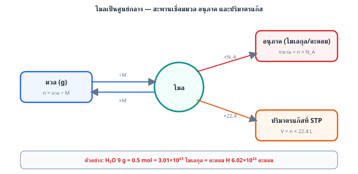
2 ขั้นที่ 2: แก๊สเป็น ดังนั้นมวลอะตอมของ X
ตรงกับไนโตรเจน (N = 14) แก๊สนี้คือ
ระวัง: ตอบ O คือรีบนึกถึงแก๊สอะตอมคู่ที่คุ้นเคยโดยไม่คำนวณ — ถ้าเป็น มวลโมเลกุลต้องเป็น 32 ไม่ใช่ 28 ส่วนตอบ Cl หรือ H มวลโมเลกุลของ และ ไม่ตรงกับ 28
ตอบ: ข้อ ข.
ข้อ 2 — ตอบ ก.
โมเลกุล
หลักคิด: จำนวนอนุภาค = จำนวนโมล
คำนวณ พร้อมตัดหน่วย:
ดังนั้นมี โมเลกุล
ระวัง: ถ้าลืมคูณ 0.25 จะได้ และถ้าเผลอหารด้วย 0.25 จะได้ ซึ่งผิดทั้งคู่
ตอบ: ข้อ ก. โมเลกุล
ข้อ 3 — ตอบ ข.
อะตอม
1 ขั้นที่ 1: มวลโมเลกุลของ g/mol
2 ขั้นที่ 2: หาโมลของ
3 ขั้นที่ 3: 1 โมเลกุล มี H 3 อะตอม ดังนั้นโมลอะตอม H mol
4 ขั้นที่ 4: จำนวนอะตอม อะตอม
ระวัง: ตอบ คือนับเป็นจำนวน "โมเลกุล" โดยลืมคูณ 3 · ตอบ คือเผลอนับอะตอมทั้งหมด (N + H รวม 4 อะตอมต่อโมเลกุล) · ตอบ คือเผลอคิดว่ามีสาร 1 โมลพอดี
ตอบ: ข้อ ข. อะตอม
ข้อ 4 — ตอบ ง.
หลักคิด: ที่ STP แก๊ส 1 โมลมีปริมาตร 22.4 L ดังนั้นมวลโมเลกุล = ความหนาแน่น 22.4
คำนวณ:
เทียบมวลโมเลกุลของตัวเลือก: , , ,
แก๊สที่มีมวลโมเลกุล 28 คือ
ระวัง: ถ้าเผลอหาร จะหลงไปตอบ (ใกล้ 16) ที่ถูกต้องคูณ เพราะความหนาแน่นคือมวลของแก๊สเพียง 1 L แต่ 1 โมลมีปริมาตรถึง 22.4 L
ตอบ: ข้อ ง.
ข้อ 5 — ตอบ ง.
มีจำนวนอะตอมออกซิเจนทั้งหมดเท่ากับ อะตอม
ตรวจแต่ละข้อ
1 ขั้นที่ 1: หามวลโมเลกุลของ g/mol และจำนวนโมล
→ ข้อ (ก) ถูก
2 ขั้นที่ 2: จำนวนโมเลกุล
→ ข้อ (ข) ถูก
3 ขั้นที่ 3: ปริมาตรที่ STP
→ ข้อ (ค) ถูก
4 ขั้นที่ 4: จำนวนอะตอมออกซิเจน — ใน 1 โมเลกุล มีออกซิเจน 2 อะตอม ต้องคูณ 2 จากจำนวนโมเลกุล
ไม่ใช่ ตามที่ข้อ (ง) กล่าว → ข้อ (ง) ผิด (ลืมคูณจำนวนอะตอมออกซิเจนต่อโมเลกุล)
ตอบ: ข้อ ง. มีจำนวนอะตอมออกซิเจนทั้งหมดเท่ากับ อะตอม
ข้อ 6 — ตอบ ค.
11.2 L
1 ขั้นที่ 1: หามวลโมเลกุลของ g/mol
2 ขั้นที่ 2: แปลงกรัมเป็นโมล
3 ขั้นที่ 3: แปลงโมลเป็นปริมาตรที่ STP
ระวัง: ตอบ 22.4 L คือลืมคิดจำนวนโมล ส่วน 5.6 L มักเกิดจากใช้มวลโมเลกุลผิดเป็น 32
ตอบ: ข้อ ค. 11.2 L
ข้อ 7 — ตอบ ค.
(ก) และ (ข)
ตรวจ (ก): โมล mol และโมล mol เท่ากัน จำนวนโมเลกุลจึงเท่ากัน — ถูก
ตรวจ (ข): โมล mol มวล g — ถูก
ตรวจ (ค): โมลน้ำ mol แต่ 1 โมเลกุล มี 3 อะตอม (H 2 อะตอม + O 1 อะตอม)
จำนวนอะตอมทั้งหมด อะตอม — ผิด
(ค่า คือจำนวน "โมเลกุล" ของน้ำ 0.5 โมล — ตัวลวงมาจากการสับสนระหว่างโมเลกุลกับอะตอม)
ดังนั้นข้อความที่ถูกคือ (ก) และ (ข)
ตอบ: ข้อ ค. (ก) และ (ข)
ข้อ 8 — ตอบ ค.
37.6 g
หลักคิด: ตั้งตัวแปรจากข้อมูล 2 เงื่อนไข คือโมลรวมและโมลอะตอมรวม แล้วแก้ระบบสมการ
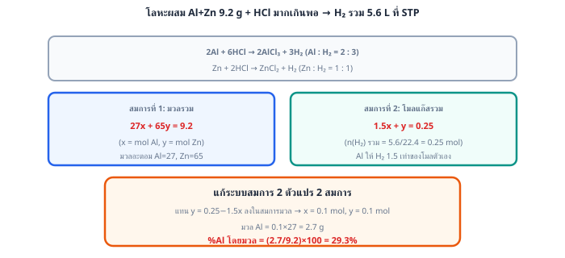
1 ขั้นที่ 1: ให้ โมล และ โมล
2 ขั้นที่ 2: 1 โมเลกุลมี 3 อะตอม ส่วน มี 2 อะตอม ดังนั้น
จึงมี 0.6 โมล และ 0.4 โมล
3 ขั้นที่ 3: หามวลรวม (มวลโมเลกุล , )
ระวัง: ตอบ 44.0 คือเผลอคิดว่าเป็น ทั้งหมด ตอบ 36.0 คือเดาว่าแก๊สทั้งสองมีอย่างละ 0.5 โมลโดยไม่ใช้เงื่อนไขจำนวนอะตอม และตอบ 34.4 คือสลับจำนวนโมลของแก๊สทั้งสอง
ตอบ: ข้อ ค. 37.6 g
ข้อ 9 — ตอบ ง.
63.55
หลักคิด: มวลอะตอมเฉลี่ย = ผลรวมของ (มวลไอโซโทป สัดส่วนความชุกชุม)
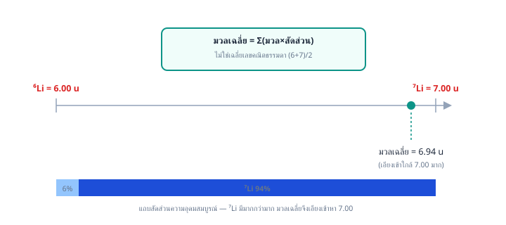
คำนวณ:
มวลอะตอมเฉลี่ยของทองแดง = 63.55 amu (ค่าจะเอียงเข้าหาไอโซโทปที่มีปริมาณมากกว่า)
ระวัง: ตอบ 63.93 คือเฉลี่ยแบบธรรมดาโดยไม่ถ่วงน้ำหนักด้วยร้อยละ และตอบ 64.31 เกิดจากสลับร้อยละของไอโซโทปทั้งสอง
ตอบ: ข้อ ง. 63.55
ข้อ 10 — ตอบ ก.
9.00 กรัม
1 ขั้นที่ 1: หามวลสูตรของ
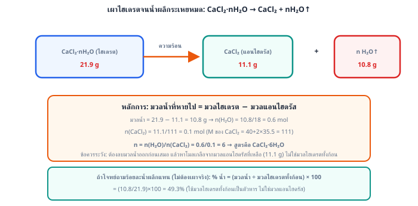
g/mol
2 ขั้นที่ 2: หาโมลของไฮเดรตทั้งก้อน
3 ขั้นที่ 3: ใน 1 โมลไฮเดรตมีน้ำผลึก 5 โมล ดังนั้นมวลน้ำผลึกที่หายไป
กรัม
ระวัง: ตอบ 15.95 กรัม คือมวลเกลือแอนไฮดรัส ที่เหลืออยู่ (ตอบผิดโจทย์ที่ถามหามวลน้ำ) · ตอบ 4.99 กรัม คือเผลอเอามวลไฮเดรตทั้งก้อนหารด้วย 5 ตรงๆ โดยไม่ผ่านมวลสูตร · ตอบ 18.00 กรัม คือตอบเป็นมวลโมเลกุลของน้ำ 1 โมเลกุล โดยไม่คิดปริมาณที่มีอยู่จริง
ตอบ: ข้อ ก. 9.00 กรัม
ข้อ 11 — ตอบ ก.
หลักคิด: สูตรเอมพิริคัลคืออัตราส่วนอย่างต่ำของจำนวนอะตอมแต่ละธาตุ
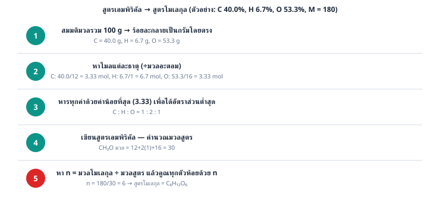
คำนวณ: C : H หารด้วย 6 ตลอด ได้
สูตรเอมพิริคัลคือ
ระวัง: ตอบ คือสับสนว่าสูตรโมเลกุลกับสูตรเอมพิริคัลเป็นสิ่งเดียวกัน ส่วน และ เป็นการหารที่ยังไม่ต่ำสุด (หารด้วย 3 หรือ 2 แทนที่จะหารด้วย 6)
ตอบ: ข้อ ก.
ข้อ 12 — ตอบ ข.
36.07
1 ขั้นที่ 1: หามวลสูตรของ
2 ขั้นที่ 2: มวลของน้ำผลึก
3 ขั้นที่ 3: หาร้อยละโดยมวล
ดังนั้นมีน้ำผลึกร้อยละ 36.07 โดยมวล
ระวัง: ตอบ 10.14 คือคิดน้ำเพียง 1 โมเลกุลทั้งในตัวเศษและในมวลสูตร ( — ลืมคูณ 5 ทั้งสองที่) ตอบ 63.93 คือร้อยละของส่วน ไม่ใช่ของน้ำ และตอบ 18.00 คือจำมวลโมเลกุลของน้ำมาตอบโดยไม่ได้คิดร้อยละ
ตอบ: ข้อ ข. 36.07
ข้อ 13 — ตอบ ค.
7
1 ขั้นที่ 1: มวลสูตรของ g/mol
โมลของ mol
2 ขั้นที่ 2: มวลน้ำผลึกที่ระเหยไป g
โมลของ mol
3 ขั้นที่ 3: หาอัตราส่วนโมล
สูตรไฮเดรตคือ
ระวัง: ตอบ 3 เกิดจากเผลอใช้มวลไฮเดรตทั้งก้อน 24.6 g หารด้วย 120 เป็นโมลเกลือ () — ต้องใช้มวลเกลือแอนไฮดรัส 12.0 g เท่านั้น · ตอบ 5 หรือ 10 คือจำสูตรไฮเดรตที่คุ้นตา (, ) มาตอบโดยไม่คำนวณ
ตอบ: ข้อ ค. 7
ข้อ 14 — ตอบ ข.
21.21
1 ขั้นที่ 1: หามวลสูตรของ
2 ขั้นที่ 2: มวลของไนโตรเจนใน 1 หน่วยสูตร มี N 2 อะตอม
3 ขั้นที่ 3: หาร้อยละโดยมวล
ดังนั้นมีไนโตรเจนร้อยละ 21.21 โดยมวล
ระวัง: ตอบ 10.61 คือลืมคูณ 2 (คิด N เพียงอะตอมเดียว) ส่วน 24.24 และ 48.48 คือร้อยละของ S และ O ตามลำดับ
ตอบ: ข้อ ข. 21.21
ข้อ 15 — ตอบ ค.
1 ขั้นที่ 1: สมมติสาร 100 g จะมี Fe 70 g และ O 30 g
2 ขั้นที่ 2: แปลงเป็นโมล
Fe: mol และ O: mol
3 ขั้นที่ 3: หารด้วยค่าที่น้อยที่สุด (1.25)
Fe : O
4 ขั้นที่ 4: คูณ 2 ตลอดให้เป็นจำนวนเต็ม ได้ Fe : O
สูตรเอมพิริคัลคือ
ตรวจสอบ: ตรงกับโจทย์พอดี
ตอบ: ข้อ ค.
ข้อ 16 — ตอบ ก.
1 ขั้นที่ 1: หามวลของหน่วยสูตรเอมพิริคัล
2 ขั้นที่ 2: หาจำนวนหน่วย
3 ขั้นที่ 3: สูตรโมเลกุล
ตรวจสอบ: ตรงกับมวลโมเลกุลที่กำหนด
ระวัง: ตอบ คือสับสนระหว่างสูตรเอมพิริคัลกับสูตรโมเลกุล ส่วนตัวเลือกอื่นมีมวลโมเลกุลไม่ถึง 180
ตอบ: ข้อ ก.
ข้อ 17 — ตอบ ค.
หลักคิด: ที่อุณหภูมิและความดันเดียวกัน อัตราส่วนปริมาตรแก๊ส = อัตราส่วนโมล (กฎของเกย์-ลูสแซกและหลักอาโวกาโดร)
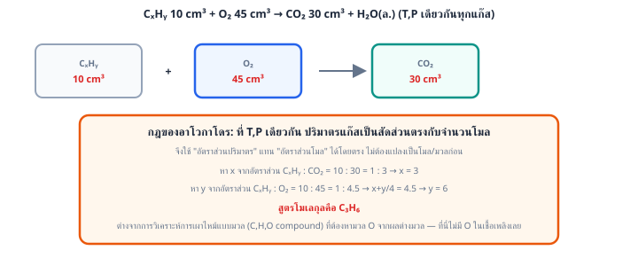
สมการเผาไหม้:
1 ขั้นที่ 1: หา จากอัตราส่วนปริมาตร
ดังนั้น
2 ขั้นที่ 2: หา จากอัตราส่วน
สูตรโมเลกุลคือ
ตรวจสอบ: ใช้ 45 cm³ เกิด 30 cm³ ตรงกับโจทย์
ระวัง: ตอบ คือเผลอปัดสัมประสิทธิ์ออกซิเจนเป็น 5 · ตอบ คือลบเลขพลาดตอนย้ายข้าง: คิด เป็น (ที่ถูกคือ ) จึงได้ · ตอบ คืออ่านอัตราส่วน ผิด
ตอบ: ข้อ ค.
ข้อ 18 — ตอบ ข.
34.8
1 ขั้นที่ 1: หามวล C จาก (มวลโมเลกุล 44)
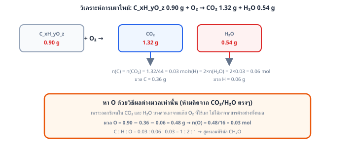
โมล C โมล mol ดังนั้นมวล C g
2 ขั้นที่ 2: หามวล H จาก (มวลโมเลกุล 18) โดย 1 โมเลกุลน้ำมี H 2 อะตอม
โมล H mol ดังนั้นมวล H g
3 ขั้นที่ 3: หามวล O ด้วยวิธีผลต่าง — จะคิดมวล O จาก และ โดยตรงไม่ได้ เพราะ O ส่วนหนึ่งมาจากแก๊สออกซิเจนที่ใช้เผา
มวล O ในสาร g
4 ขั้นที่ 4: หาร้อยละโดยมวล
ตรวจสอบ: อัตราส่วนโมล C : H : O สอดคล้องกับเอทานอล ซึ่งเป็นเชื้อเพลิงที่ผสมในแก๊สโซฮอล์จริง
ระวัง: ตอบ 52.2 คือร้อยละของ C และตอบ 13.0 คือร้อยละของ H (อ่านโจทย์ไม่ครบว่าถามธาตุใด) · ตอบ 65.2 คือร้อยละของ C กับ H รวมกัน (ลืมนำไปลบออกจาก 100)
ตอบ: ข้อ ข. 34.8
ข้อ 19 — ตอบ ค.
10
1 ขั้นที่ 1: หามวลสูตรของ g/mol
2 ขั้นที่ 2: ตั้งสมการร้อยละโดยมวลของน้ำ โดยมวลสูตรไฮเดรตทั้งก้อนคือ
3 ขั้นที่ 3: แก้สมการ
สูตรไฮเดรตคือ
ระวัง: ตอบ 5 และ 7 คือจำค่า ของไฮเดรตชื่อดังอื่น (, ) มาตอบโดยไม่คำนวณ · ตอบ 12 มาจากปัดเศษขั้นแก้สมการผิดจังหวะ (ลืมกระจาย 0.6294 เข้าไปคูณ ในวงเล็บก่อนย้ายข้าง)
ตอบ: ข้อ ค. 10
ข้อ 20 — ตอบ ข.
56
1 ขั้นที่ 1: มวลน้ำผลึกที่หายไป กรัม
โมลของน้ำ
2 ขั้นที่ 2: สูตรไฮเดรตกำหนด ดังนั้นโมลของเกลือแอนไฮดรัส
3 ขั้นที่ 3: หามวลสูตรของเกลือแอนไฮดรัส
4 ขั้นที่ 4: หามวลอะตอมของ M
(ตรงกับเหล็ก Fe ในเกลือ หรือแร่กรีนวิทริออลที่พบจริง)
ระวัง: ตอบ 24 และ 65 คือเดามวลอะตอมของโลหะที่คุ้นเคย (Mg, Zn) โดยไม่คำนวณ · ตอบ 88 คือลืมลบมวลของ S ออกจาก (ลบเฉพาะออกซิเจน 4 อะตอมเท่านั้น)
ตอบ: ข้อ ข. 56
ข้อ 21 — ตอบ ก.
1 ขั้นที่ 1: หาโมลธาตุจากผลิตภัณฑ์การเผาไหม้
โมล C จาก :
โมล H จาก :
โมล N จาก :
2 ขั้นที่ 2: หามวล O โดยลบมวลธาตุอื่นออกจากมวลตัวอย่าง
3 ขั้นที่ 3: หาอัตราส่วนโมล (หารด้วยค่าน้อยสุด 0.2)
สูตรเอมพิริคัลคือ ซึ่งมีมวล
4 ขั้นที่ 4: หา ดังนั้นสูตรโมเลกุลคือ เช่นเดิม (นี่คือไกลซีน)
ระวัง: ข้อ ขาดออกซิเจนไป 1 อะตอม (ลืมคำนวณ O จากผลต่างมวล) ข้อ คือสูตรคูณ 2 ซึ่งจะมีมวลโมเลกุล 150 ไม่ตรงกับที่โจทย์กำหนด และข้อ มีอัตราส่วนอะตอมผิดจากที่คำนวณได้
ตอบ: ข้อ ก.
ข้อ 22 — ตอบ ก.
1 ขั้นที่ 1: หาโมลและมวลของ C จาก (มวลโมเลกุล 44)
โมล C โมล mol ดังนั้นมวล C g
2 ขั้นที่ 2: หาโมลและมวลของ H จาก (มวลโมเลกุล 18) โดย 1 โมเลกุลน้ำมี H 2 อะตอม
โมล H mol ดังนั้นมวล H g
3 ขั้นที่ 3: หามวลของ O ในสารตัวอย่างโดยวิธีผลต่าง (จะนำมวล O จาก กับ มาคิดตรง ๆ ไม่ได้ เพราะ O ส่วนหนึ่งมาจากแก๊สออกซิเจนที่ใช้เผา)
มวล O g ดังนั้นโมล O mol
4 ขั้นที่ 4: หาอัตราส่วนโมลอย่างต่ำ
C : H : O
สูตรเอมพิริคัลคือ
ตอบ: ข้อ ก.
ข้อ 23 — ตอบ ข.
0.4 mol/L
1 ขั้นที่ 1: มวลสูตรของ NaOH g/mol
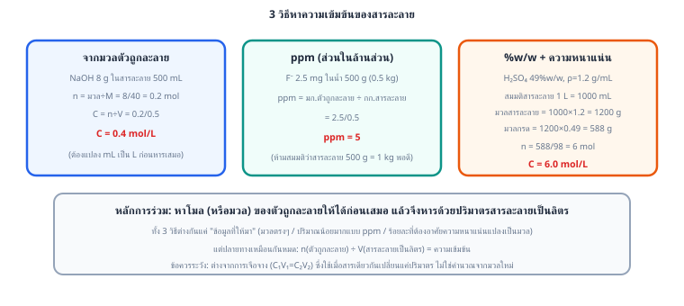
2 ขั้นที่ 2: หาจำนวนโมล
3 ขั้นที่ 3: แปลงปริมาตร 500 mL L แล้วหาความเข้มข้น
ระวัง: ตอบ 0.2 คือลืมหารด้วยปริมาตร, ตอบ 0.1 คือเผลอคูณปริมาตรแทนที่จะหาร และตอบ 16 คือลืมหารด้วยมวลสูตร
ตอบ: ข้อ ข. 0.4 mol/L
ข้อ 24 — ตอบ ค.
5 ppm
หลักคิด: ppm (ส่วนในล้านส่วน) = มิลลิกรัมของตัวถูกละลายต่อกิโลกรัมของสารละลาย
1 ขั้นที่ 1: แปลงมวลสารละลาย 500 g kg
2 ขั้นที่ 2: คำนวณ
หรือคิดจากนิยามโดยตรง:
ระวัง: ตอบ 2.5 คือเผลอคิดว่ามวลสารละลายเป็น 1 kg พอดี ทั้งที่จริงมีเพียง 0.5 kg
ตอบ: ข้อ ค. 5 ppm
ข้อ 25 — ตอบ ข.
20 mL
หลักคิด: การเจือจางไม่เปลี่ยนจำนวนโมลของตัวถูกละลาย จึงใช้
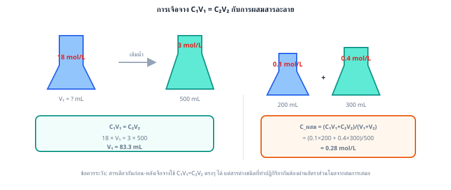
คำนวณ:
ดังนั้นตวงสารละลายเข้มข้น 20 mL แล้วเติมน้ำจนปริมาตรครบ 500 mL
ตรวจสอบ: โมลก่อนเจือจาง mol เท่ากับโมลหลังเจือจาง mol
ระวัง: ตอบ 25 มักเกิดจากคิดแค่อัตราส่วน โดยไม่นำปริมาตรมาคูณให้ถูกวิธี
ตอบ: ข้อ ข. 20 mL
ข้อ 26 — ตอบ ง.
0.20 mol/L
1 ขั้นที่ 1: หาโมล จาก NaCl ซึ่งแตกตัวให้ 1 ไอออนต่อหน่วยสูตร
2 ขั้นที่ 2: หาโมล จาก ซึ่งแตกตัวให้ 2 ไอออนต่อหน่วยสูตร
3 ขั้นที่ 3: รวมโมลแล้วหารด้วยปริมาตรรวม mL L
ระวัง: ตอบ 0.12 คือลืมคูณ 2 ให้ ตอบ 0.15 คือนำความเข้มข้นมาเฉลี่ยตรง ๆ โดยไม่ถ่วงด้วยปริมาตร และ 0.10 คือจำนวนโมลรวมที่ยังไม่ได้หารปริมาตร
ตอบ: ข้อ ง. 0.20 mol/L
ข้อ 27 — ตอบ ค.
6.0 mol/L
1 ขั้นที่ 1: คิดจากสารละลาย 1 L mL หามวลสารละลายจากความหนาแน่น
2 ขั้นที่ 2: หามวล จากร้อยละ 49 โดยมวล
3 ขั้นที่ 3: มวลโมเลกุล แล้วหาโมล
สารละลาย 1 L มีกรด 6 mol ความเข้มข้นจึงเท่ากับ 6.0 mol/L
ระวัง: ตอบ 5.0 คือลืมใช้ความหนาแน่น (เผลอคิดว่าสารละลาย 1 L หนัก 1000 g) ส่วน 7.2 คือเผลอคูณความหนาแน่นซ้ำสองครั้ง
ตอบ: ข้อ ค. 6.0 mol/L
ข้อ 28 — ตอบ ข.
0.33
1 ขั้นที่ 1: สลายตัวไป mol จึงเหลือ mol
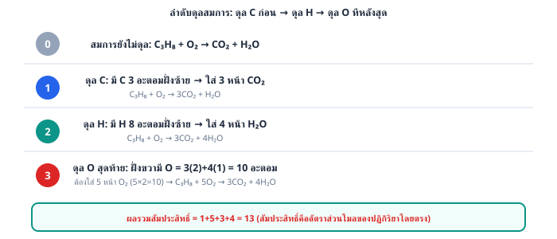
2 ขั้นที่ 2: จากอัตราส่วน เกิด mol
3 ขั้นที่ 3: โมลรวมของแก๊สผสม mol (โมลรวมเพิ่มขึ้น เพราะ 1 โมเลกุลแตกเป็น 2 โมเลกุล)
4 ขั้นที่ 4: เศษส่วนโมลของ
ระวัง: ตอบ 0.40 คือเผลอหารด้วยโมลตั้งต้น 1.0 mol โดยลืมว่าโมลรวมเปลี่ยนเป็น 1.2 mol · ตอบ 0.20 คือตอบร้อยละการสลายตัวตรง ๆ · ตอบ 0.50 คือคิดอัตราส่วน ซึ่งเทียบกับ ที่เหลือ ไม่ใช่เทียบกับแก๊สผสมทั้งหมด
ตอบ: ข้อ ข. 0.33
ข้อ 29 — ตอบ ง.
19
1 ขั้นที่ 1: ดุล C ก่อน: C 2 อะตอม ให้เป็น
2 ขั้นที่ 2: ดุล H: H 6 อะตอม ให้เป็น
3 ขั้นที่ 3: นับ O ด้านผลิตภัณฑ์ อะตอม จึงต้องใช้
4 ขั้นที่ 4: คูณ 2 ตลอดสมการเพื่อให้เป็นจำนวนเต็มต่ำสุด
ตรวจสอบ: C: , H: , O: ดุลครบทุกธาตุ
5 ขั้นที่ 5: ผลรวมสัมประสิทธิ์
ระวัง: ตอบ 13 มักเกิดจากคูณ 2 เฉพาะ () โดยลืมคูณสารตัวอื่นด้วย
ตอบ: ข้อ ง. 19
ข้อ 30 — ตอบ ก.
5.6 L
1 ขั้นที่ 1: หามวลสูตรของ g/mol
2 ขั้นที่ 2: หาโมลของ
3 ขั้นที่ 3: จากสมการ อัตราส่วนโมล จึงเกิด 0.25 mol
4 ขั้นที่ 4: แปลงเป็นปริมาตรที่ STP
ระวัง: ตอบ 22.4 L คือลืมคิดจำนวนโมล ส่วน 11.2 L มักมาจากคิดโมลผิดเป็น 0.5 mol
ตอบ: ข้อ ก. 5.6 L
ข้อ 31 — ตอบ ง.
เป็นสารกำหนดปริมาณ
หลักคิด: สารกำหนดปริมาณคือสารตั้งต้นที่หมดก่อน โดยเทียบโมลที่มีกับอัตราส่วนตามสมการ
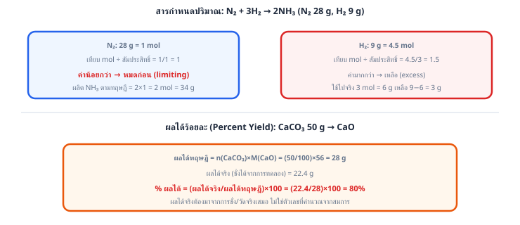
คำนวณ: ตามสมการ
ถ้าจะใช้ 4 โมลให้หมด ต้องใช้ โมล แต่มีเพียง 1 โมล
ดังนั้น หมดก่อน จึงเป็นสารกำหนดปริมาณ (และเหลือ อีก โมล)
ระวัง: ตอบ คือเห็นว่าอัตราส่วนของ ในสมการมากกว่าจึงคิดว่าหมดก่อน ต้องเทียบกับปริมาณที่มีจริงเสมอ ส่วน เป็นผลิตภัณฑ์ ไม่มีทางเป็นสารกำหนดปริมาณ
ตอบ: ข้อ ง. เป็นสารกำหนดปริมาณ
ข้อ 32 — ตอบ ก.
80.0
1 ขั้นที่ 1: หาโมลของ Zn
2 ขั้นที่ 2: อัตราส่วน Zn : ZnS ดังนั้นผลได้ตามทฤษฎีของ ZnS (มวลสูตร )
3 ขั้นที่ 3: ผลได้ร้อยละ
ระวัง: ตอบ 119.4 คือเผลอหารผลได้จริงด้วยมวล Zn ที่ใส่ (13 g) แทนที่จะหารด้วยผลได้ตามทฤษฎี ผลได้ร้อยละเกิน 100 ควรสะกิดใจว่าคิดผิด ส่วน 97.0 คือมวลสูตรของ ZnS ไม่ใช่คำตอบ
ตอบ: ข้อ ก. 80.0
ข้อ 33 — ตอบ ง.
(ก) และ (ค)
ตรวจ (ก): ระบบปิดและสารตั้งต้นทำปฏิกิริยาพอดีทั้งหมด มวลผลิตภัณฑ์ g ตามกฎทรงมวล — ถูก
ตรวจ (ข): A กับ B รวมตัวกันด้วยอัตราส่วนมวลคงที่ เสมอ
ถ้ามี B 6.0 g จะใช้ A เพียง g ดังนั้น B หมดก่อน (เป็นสารกำหนดปริมาณ) ได้ C เพียง 10.0 g และเหลือ A อีก 2.0 g — ผิด (ตัวลวง 12.0 g มาจากการจับมวลที่ใส่ลงไปบวกกันตรง ๆ โดยลืมว่าสารรวมตัวตามสัดส่วนคงที่ ไม่ใช่ตามปริมาณที่ใส่)
ตรวจ (ค): สารประกอบชนิดเดียวกันมีอัตราส่วนมวลของธาตุองค์ประกอบคงที่ตามกฎสัดส่วนคงที่ — ถูก
ดังนั้นข้อความที่ถูกคือ (ก) และ (ค)
ตอบ: ข้อ ง. (ก) และ (ค)
ข้อ 34 — ตอบ ก.
(ก) และ (ข)
ตรวจ (ก): โมล Mg mol ถ้าจะใช้ Mg หมดต้องมี HCl mol แต่มีเพียง 0.3 mol ดังนั้น HCl หมดก่อน เป็นสารกำหนดปริมาณ — ถูก
ตรวจ (ข): คิดจากสารกำหนดปริมาณ อัตราส่วน
โมล mol ปริมาตรที่ STP L — ถูก
ตรวจ (ค): Mg ที่ทำปฏิกิริยา mol จึงเหลือ mol คิดเป็น g ไม่ใช่ 2.4 g — ผิด
(ตัวลวง 2.4 g มาจากการนำ mol มาลบกันตรง ๆ โดยข้ามอัตราส่วนโมล Mg : HCl ในสมการ)
ดังนั้นข้อความที่ถูกคือ (ก) และ (ข)
ตอบ: ข้อ ก. (ก) และ (ข)
ข้อ 35 — ตอบ ค.
33.0 g
1 ขั้นที่ 1: มวลโมลาร์ g/mol, g/mol, g/mol
2 ขั้นที่ 2: แปลงเป็นโมล
,
3 ขั้นที่ 3: หาสารกำหนดปริมาณ (สัมประสิทธิ์ 1:1 ทั้งคู่ จึงเทียบโมลตรงๆ) — กรดอะซิติก (0.5 mol) น้อยกว่า จึงเป็นสารกำหนดปริมาณ
4 ขั้นที่ 4: หาผลได้ตามทฤษฎีจากสารกำหนดปริมาณ
5 ขั้นที่ 5: คิดผลได้ร้อยละ
ระวัง: ตอบ 44.0 g คือลืมคูณผลได้ร้อยละ ตอบ 39.6 g เกิดจากใช้เอทานอลผิดเป็นสารกำหนดปริมาณ () และ 25.0 g เป็นค่าที่คำนวณผิดพลาดจากการหารซ้ำ
ตอบ: ข้อ ค. 33.0 g
ข้อ 36 — ตอบ ข.
34 g
1 ขั้นที่ 1: หาโมลของสารตั้งต้นแต่ละตัว
: mol และ : mol
2 ขั้นที่ 2: หาสารกำหนดปริมาณ — ถ้าใช้ ทั้งหมด 1 mol ต้องใช้ mol แต่มี ถึง 4.5 mol แสดงว่า เหลือ ดังนั้น คือสารกำหนดปริมาณ
3 ขั้นที่ 3: คิดผลิตภัณฑ์จากสารกำหนดปริมาณ อัตราส่วน
ได้ mol
4 ขั้นที่ 4: มวลโมเลกุล
มวล g
ระวัง: ตอบ 51 g เกิดจากเผลอใช้ เป็นสารกำหนดปริมาณ () ซึ่งผิดเพราะ มีมากเกินพอ
ตอบ: ข้อ ข. 34 g
ข้อ 37 — ตอบ ค.
75.0%
1 ขั้นที่ 1: หามวลสูตร แล้วหาโมล
2 ขั้นที่ 2: หาผลได้ตามทฤษฎี — จากสมการ
โมล Fe mol ดังนั้นมวลตามทฤษฎี g
3 ขั้นที่ 3: หาผลได้ร้อยละ
ระวัง: ตอบ 150% เกิดจากลืมคูณ 2 (คิดผลได้ทฤษฎีเป็น 11.2 g) ซึ่งเป็นไปไม่ได้เพราะผลได้เกิน 100% ส่วน 52.5% คือเอามวลเหล็กจริงไปหารด้วยมวลแร่ 32 g โดยตรง
ตอบ: ข้อ ค. 75.0%
ข้อ 38 — ตอบ ข.
19.04 g
หลักคิด: ต้องหาสารกำหนดปริมาณก่อน แล้วจึงคิดผลได้ตามทฤษฎีและคูณด้วยผลได้ร้อยละ
1 ขั้นที่ 1: หาโมลสารตั้งต้น
Al: mol และ : mol
2 ขั้นที่ 2: Al 0.4 mol ต้องการ เพียง mol แต่มีถึง 0.3 mol ดังนั้น Al เป็นสารกำหนดปริมาณ
3 ขั้นที่ 3: ผลได้ตามทฤษฎีของ Fe (อัตราส่วน Al : Fe )
4 ขั้นที่ 4: คิดผลได้ร้อยละ 85
ระวัง: ตอบ 22.40 คือลืมคูณผลได้ร้อยละ ตอบ 28.56 คือใช้ เป็นสารกำหนดปริมาณ () ทั้งที่มันเหลือ และตอบ 26.35 คือเผลอหารด้วย 0.85 แทนที่จะคูณ
ตอบ: ข้อ ข. 19.04 g
ข้อ 39 — ตอบ ก.
2 โมล
หลักคิด: ไล่อัตราส่วนโมลผ่านสารตัวกลางทีละขั้น
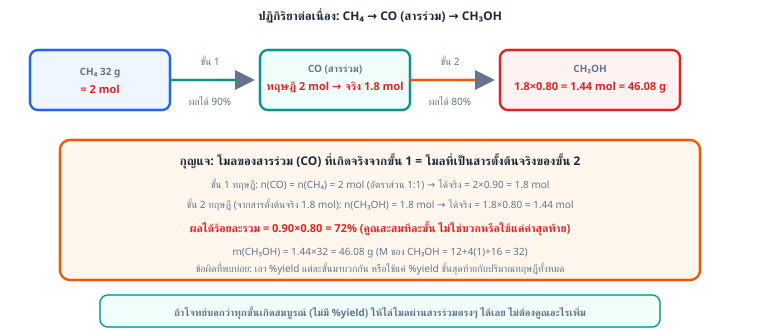
1 ขั้นที่ 1: ดังนั้น 2 โมล ให้ 2 โมล
2 ขั้นที่ 2: ดังนั้นได้โลหะ 2 โมล
ระวัง: ตอบ 1 โมล คือเผลอหารสองจากสัมประสิทธิ์ 2 ในสมการขั้นที่ 1 ทั้งที่อัตราส่วนจริงคือ 1 : 1 ตอบ 3 โมล คือหลงใช้สัมประสิทธิ์ของ และตอบ 4 โมล คือเผลอคูณสองซ้ำจากสัมประสิทธิ์ทั้งสองขั้น
ตอบ: ข้อ ก. 2 โมล
ข้อ 40 — ตอบ ง.
37.0 g
1 ขั้นที่ 1: หาโมลของ (มวลสูตร )
2 ขั้นที่ 2: อัตราส่วนทุกขั้นเป็น ดังนั้น 0.5 mol CaO 0.5 mol 0.5 mol
3 ขั้นที่ 3: มวลสูตรของ
ระวัง: ตอบ 28.0 คือหยุดที่ CaO () ไม่ได้ไปต่อขั้นที่ 2 ตอบ 74.0 คือลืมคูณจำนวนโมล และตอบ 18.5 คือเผลอหารสองซ้ำอีกครั้ง
ตอบ: ข้อ ง. 37.0 g
ข้อ 41 — ตอบ ค.
19.6 kg
1 ขั้นที่ 1: หาโมลของกำมะถัน
2 ขั้นที่ 2: ไล่อัตราส่วนโมลทีละขั้น — อะตอมกำมะถันไม่หายไปไหน
ได้ 200 mol
ได้ 200 mol
ได้ 200 mol
3 ขั้นที่ 3: มวลโมเลกุล
มวลกรด g kg
ระวัง: ตอบ 9.8 kg เกิดจากเห็นสัมประสิทธิ์ 2 หน้า ในขั้นที่สองแล้วเผลอหารสอง — ที่จริงอัตราส่วน คือ · ตอบ 39.2 kg คือเผลอคูณ 2 จากความเข้าใจผิดเดียวกัน · ตอบ 4.9 kg คือหารสองซ้ำสองครั้ง
ตอบ: ข้อ ค. 19.6 kg
ข้อ 42 — ตอบ ข.
44.8 L
1 ขั้นที่ 1: g/mol
2 ขั้นที่ 2: ใช้สมการขั้นที่ 1 หาโมลสารร่วม และ ที่ได้จากขั้นนี้ (อัตราส่วน )
,
3 ขั้นที่ 3: ทั้งหมด 0.5 mol ที่ได้จากขั้นที่ 1 เป็นสารตั้งต้นของขั้นที่ 2 (อัตราส่วน )
4 ขั้นที่ 4: รวม ทั้งสองขั้น
ระวัง: ตอบ 33.6 L คือคิดเฉพาะ จากขั้นที่ 1 (ลืมรวมขั้นที่ 2) ตอบ 11.2 L คือคิดเฉพาะขั้นที่ 2 และตอบ 67.2 L เกิดจากใช้อัตราส่วนรวมผิด
ตอบ: ข้อ ข. 44.8 L
ข้อ 43 — ตอบ ก.
196 g
1 ขั้นที่ 1: g/mol
2 ขั้นที่ 2: ใช้สมการขั้นที่ 1 หาโมลสารร่วม (อัตราส่วน )
3 ขั้นที่ 3: ใช้สมการขั้นที่ 2 หาโมล (อัตราส่วน )
4 ขั้นที่ 4: มวล ()
ระวัง: ตอบ 49 g เกิดจากใช้อัตราส่วนขั้นที่ 2 เป็น 1:1 แทนที่จะเป็น 1:4 (ลืมคูณ 4) ตอบ 98 g คือคำนวณโมล ผิดเป็น 1 mol และตอบ 392 g เกิดจากคูณเกินสองเท่าโดยไม่ได้ตั้งใจ
ตอบ: ข้อ ก. 196 g
ข้อ 44 — ตอบ ก.
16.8 g
1 ขั้นที่ 1: หาโมลของ (มวลโมเลกุล )
2 ขั้นที่ 2: ไล่อัตราส่วนโมลผ่านทุกขั้น
อัตราส่วน ได้ NO mol
อัตราส่วน ได้ mol
อัตราส่วน ได้ mol
3 ขั้นที่ 3: มวลโมเลกุลของ
ระวัง: ตอบ 25.2 คือคิดว่าอัตราส่วน เป็น ตอบ 37.8 คือกลับเศษส่วนเป็น และตอบ 12.6 คือเผลอหารสองจากสัมประสิทธิ์ของขั้นที่ 2
ตอบ: ข้อ ก. 16.8 g
ข้อ 45 — ตอบ ก.
29.3
1 ขั้นที่ 1: โมล ทั้งหมด mol
2 ขั้นที่ 2: ตั้งระบบสมการ ให้ Al mol และ Zn mol
สมการมวล:
สมการแก๊ส (Al 1 mol ให้ mol ส่วน Zn 1 mol ให้ 1 mol):
3 ขั้นที่ 3: แก้ระบบสมการ — จากสมการแก๊ส แทนลงในสมการมวล
และ
4 ขั้นที่ 4: มวล Al g
ตรวจสอบ: มวล Zn g รวม g ตรงกับโจทย์
ระวัง: ตอบ 70.7 คือร้อยละของสังกะสี (อ่านโจทย์ไม่ครบ) · ตอบ 54.4 เกิดจากเผลอใช้อัตราส่วน Al : ทั้งที่จากสมการเป็น · ตอบ 50.0 คือเห็นว่าโมลของโลหะทั้งสองเท่ากันแล้วสรุปว่ามวลเท่ากัน ซึ่งผิดเพราะมวลอะตอมต่างกัน
ตอบ: ข้อ ก. 29.3
ข้อ 46 — ตอบ ก.
19.2 g
1 ขั้นที่ 1: โมล mol (มวลสูตร )
2 ขั้นที่ 2: คิดผลได้จริงของขั้นแรก — อัตราส่วน
CaO ตามทฤษฎี mol แต่ได้จริง mol
3 ขั้นที่ 3: นำ CaO จริง 0.4 mol เข้าขั้นที่สอง — อัตราส่วน
ตามทฤษฎี mol แต่ได้จริง mol
4 ขั้นที่ 4: มวลสูตร
มวล g
(สังเกต: ผลได้รวมของสองขั้นตอน ต้องนำมาคูณกัน ไม่ใช่เลือกใช้ค่าใดค่าหนึ่ง)
ระวัง: ตอบ 32.0 g คือคิดว่าทุกขั้นเกิดสมบูรณ์ 100% · ตอบ 25.6 g คือคิดเฉพาะผลได้ขั้นแรก (80%) แล้วลืมขั้นที่สอง · ตอบ 24.0 g คือคิดเฉพาะผลได้ขั้นที่สอง (75%) แล้วลืมขั้นแรก
ตอบ: ข้อ ก. 19.2 g
ข้อ 47 — ตอบ ง.
21.6 g
1 ขั้นที่ 1: g/mol
2 ขั้นที่ 2: หาโมลสารร่วม ตามทฤษฎีจากขั้นที่ 1 (อัตราส่วน ) แล้วคูณผลได้ร้อยละของขั้นที่ 1
3 ขั้นที่ 3: 0.8 mol ที่ได้จริงคือสารตั้งต้นจริงของขั้นที่ 2 หาโมลยูเรียตามทฤษฎี (อัตราส่วน ) แล้วคูณผลได้ร้อยละของขั้นที่ 2
4 ขั้นที่ 4: มวลยูเรีย ()
ระวัง: ตอบ 30.0 g คือไม่คิดผลได้ร้อยละเลยทั้งสองขั้น ตอบ 24.0 g คือคิดเฉพาะผลได้ร้อยละขั้นที่ 2 (ลืมขั้นที่ 1) และตอบ 27.0 g คือคิดเฉพาะผลได้ร้อยละขั้นที่ 1 (ลืมขั้นที่ 2) — ผลได้ร้อยละหลายขั้นต้องคูณสะสมทีละขั้น ไม่ใช่เลือกใช้แค่ค่าเดียว
ตอบ: ข้อ ง. 21.6 g
ข้อ 48 — ตอบ ข.
27
1 ขั้นที่ 1: หาโมลอะตอมออกซิเจน
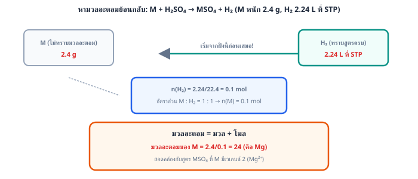
โมล mol ดังนั้นโมลอะตอม O mol
2 ขั้นที่ 2: จากสูตร อัตราส่วนโมลอะตอม M : O
โมล M mol
3 ขั้นที่ 3: มวลอะตอม
ธาตุ M คืออะลูมิเนียม (ตรวจสอบด้วยกฎทรงมวล: ออกไซด์ที่เกิดหนัก g คิดเป็น 0.1 mol ของ ซึ่งมีมวลสูตร 102 พอดี)
ระวัง: ตอบ 18 คือเผลอหารมวล M ด้วยโมลอะตอม O (0.3 mol) โดยไม่แปลงเป็นโมล M · ตอบ 36 คือหารด้วยโมล (0.15 mol) โดยลืมว่า 1 โมเลกุลมี O 2 อะตอม · ตอบ 54 คือเผลอหารมวล M ด้วยโมลของหน่วยสูตร (0.1 mol) ได้ ซึ่งเป็นมวลของ M ถึง 2 อะตอม โดยลืมหารด้วย 2
ตอบ: ข้อ ข. 27
ข้อ 49 — ตอบ ก.
23
1 ขั้นที่ 1: หาโมลของ
2 ขั้นที่ 2: จากสมการ ดังนั้นโมลเกลือ mol
มวลสูตรของเกลือ g/mol
3 ขั้นที่ 3: แยกส่วนของ ออก:
โลหะ M คือโซเดียม (Na)
ระวัง: ตอบ 46 คือลืมหารด้วย 2 (ในสูตรมี M อยู่ 2 อะตอม) · ตอบ 53 คือเอามวลสูตร 106 หาร 2 ทันทีโดยลืมหักส่วนของ ออกก่อน · ตอบ 39 คือเดาว่าเป็นโพแทสเซียมโดยไม่คำนวณ
ตอบ: ข้อ ก. 23
ข้อ 50 — ตอบ ข.
40
1 ขั้นที่ 1: หาโมลของแก๊ส ที่วัดได้
2 ขั้นที่ 2: ใช้อัตราส่วนโมลจากสมการ ()
3 ขั้นที่ 3: หามวลโมลาร์ของ
4 ขั้นที่ 4: หามวลอะตอมของ M โดยลบมวลของ ออก
(นี่คือแคลเซียม)
ระวัง: ตอบ 100 คือลืมลบมวลของ ออกทั้งหมด ตอบ 88 คือลบเฉพาะมวลคาร์บอน (12) และตอบ 52 คือลบเฉพาะมวลออกซิเจน (48) แต่ลืมลบคาร์บอน
ตอบ: ข้อ ข. 40
ข้อ 51 — ตอบ ง.
56
1 ขั้นที่ 1: หาโมลของน้ำที่วัดได้
2 ขั้นที่ 2: ใช้อัตราส่วนโมลจากสมการ ()
3 ขั้นที่ 3: หามวลโมลาร์ของ
4 ขั้นที่ 4: หามวลอะตอมของ M
(นี่คือเหล็ก)
ระวัง: ตอบ 72 คือลืมลบมวลออกซิเจนออก ตอบ 88 เกิดจากบวกมวลออกซิเจนแทนที่จะลบ และตอบ 24 เป็นค่าที่คำนวณผิดพลาดจากมวลโมลาร์ผิด — จุดสำคัญคือต้องเริ่มคำนวณจากผลิตภัณฑ์ที่ทราบสูตรครบ () ก่อนเสมอ
ตอบ: ข้อ ง. 56
ข้อ 52 — ตอบ ง.
24
หลักคิด: วัดโมลของแก๊สที่เกิด แล้วเทียบอัตราส่วนกลับไปหาโมลโลหะ จากนั้นมวลอะตอม = มวล ÷ โมล
1 ขั้นที่ 1: โมลของ
2 ขั้นที่ 2: อัตราส่วน M : ดังนั้นโมลของ M mol
3 ขั้นที่ 3: มวลอะตอม
โลหะ M คือแมกนีเซียม (Mg = 24) ซึ่งสอดคล้องกับการเกิด (เวเลนซ์ 2)
ระวัง: ตอบ 48 คือเผลอหารโมล ด้วย 2 ตามสัมประสิทธิ์ของ HCl (อัตราส่วนที่ถูกต้องคือ M ต่อ ไม่ใช่ M ต่อ HCl) และตอบ 12 คือเผลอคูณโมลเป็น 0.1
ตอบ: ข้อ ง. 24
ข้อ 53 — ตอบ ก.
40
หลักคิด: โมลของตะกอน AgCl บอกโมลของ ซึ่งโยงกลับไปหาโมลของ (1 โมลให้ 2 โมล)
1 ขั้นที่ 1: โมลของ AgCl (มวลสูตร )
ดังนั้น mol
2 ขั้นที่ 2: โมลของ mol
3 ขั้นที่ 3: มวลสูตรของ
4 ขั้นที่ 4: มวลอะตอมของ M
โลหะ M คือแคลเซียม (Ca = 40) สอดคล้องกับที่โจทย์บอกว่าเป็นโลหะหมู่ 2
ระวัง: ตอบ 111 คือหยุดที่มวลสูตรของเกลือโดยลืมหักมวลของคลอรีน ตอบ 20 คือลืมหาร 2 ในขั้นที่ 2 (ได้มวลสูตร 55.5 แล้วหัก 35.5) และตอบ 55.5 คือลืมหาร 2 แล้วยังไม่หักคลอรีนอีกด้วย
ตอบ: ข้อ ก. 40
ข้อ 54 — ตอบ ข.
0.2 mol/L
หลักคิด: ที่จุดยุติ โมลกรด = โมลเบส (HCl กับ NaOH ทำปฏิกิริยา ) จึงใช้
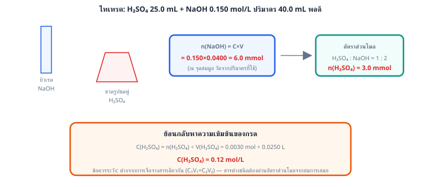
คำนวณ:
ระวัง: ตอบ 0.05 คือสลับข้างเอาปริมาตรกรดไปคูณฝั่งเบส ตอบ 0.1 คือคิดว่าความเข้มข้นต้องเท่ากันเสมอโดยไม่ดูปริมาตร และตอบ 4 คือลืมหารด้วยปริมาตรของกรด
ตอบ: ข้อ ข. 0.2 mol/L
ข้อ 55 — ตอบ ค.
20 mL
หลักคิด: กรดไดโปรติกให้ 2 ตัวต่อโมเลกุล จึงต้องใช้ NaOH เป็น 2 เท่าของโมลกรด
1 ขั้นที่ 1: โมลของ
2 ขั้นที่ 2: โมล NaOH ที่ต้องใช้ mol
3 ขั้นที่ 3: หาปริมาตร
ระวัง: ตอบ 10 mL คือลืมคูณ 2 (ลืมว่ากรดไดโปรติก) ซึ่งเป็นจุดพลาดยอดฮิตของข้อไทเทรต
ตอบ: ข้อ ค. 20 mL
ข้อ 56 — ตอบ ค.
0.06 mol/L
1 ขั้นที่ 1: หาโมลของ NaOH (สารที่รู้ค่าครบ)
2 ขั้นที่ 2: ใช้อัตราส่วนโมลจากสมการ ()
3 ขั้นที่ 3: แปลงกลับเป็นความเข้มข้น
ระวัง: ตอบ 0.12 mol/L เกิดจากเผลอตั้ง แบบสูตรเจือจาง (ไม่หารด้วยอัตราส่วนโมล 2) ซึ่งใช้ได้เฉพาะสารเดียวกันก่อน-หลังเจือจางเท่านั้น กรดออกซาลิกเป็นกรด 2 โปรตอน (diprotic) จึงต้องหารด้วย 2 เสมอ
ตอบ: ข้อ ค. 0.06 mol/L
ข้อ 57 — ตอบ ง.
1.148 g
หลักคิด: ต้องหาว่าไอออนใดหมดก่อน และอย่าลืมว่า 1 โมล ให้ 2 โมล
1 ขั้นที่ 1: หาโมลไอออน
: mol
: mol
2 ขั้นที่ 2: น้อยกว่า จึงเป็นตัวกำหนดปริมาณ ได้ AgCl mol
3 ขั้นที่ 3: มวลสูตรของ AgCl
ระวัง: ตอบ 1.435 คือใช้ เป็นตัวกำหนดทั้งที่มันเหลือ ตอบ 0.574 คือลืมคูณ 2 ของ แล้วได้ 0.004 mol และตอบ 2.583 คือจับโมลไอออนทั้งสองบวกกันซึ่งผิดหลัก
ตอบ: ข้อ ง. 1.148 g
ข้อ 58 — ตอบ ก.
เหลือเกินพอ มีความเข้มข้น 0.05 mol/L
1 ขั้นที่ 1: หาโมลเริ่มต้นของแต่ละสาร
2 ขั้นที่ 2: หาสารกำหนดปริมาณ — ต้องใช้ ต่อ ในอัตราส่วน 2:1
ถ้าใช้ ทั้งหมด 0.004 mol จะต้องการ
มี อยู่ 0.012 mol ซึ่งมากกว่า 0.008 mol ที่ต้องการ → คือสารกำหนดปริมาณ (หมดก่อน) และ เหลือเกินพอ
3 ขั้นที่ 3: หาโมล ที่เหลือ
4 ขั้นที่ 4: หาความเข้มข้นในปริมาตรรวม 80.0 mL
ระวัง: ตอบ 0.10 mol/L เกิดจากลืมใช้ปริมาตรรวม (หารด้วย 40 mL แทน 80 mL) ตอบ เหลือคือระบุสารกำหนดปริมาณผิดทาง และตัวเลือก 'พอดีกัน' ผิดเพราะ มีมากกว่าที่ต้องการ
ตอบ: ข้อ ก. เหลือเกินพอ มีความเข้มข้น 0.05 mol/L
ข้อ 59 — ตอบ ก.
79.5
หลักคิด: โมล HCl ที่ใช้บอกโมล ผ่านอัตราส่วน แล้วเทียบกลับเป็นมวลต่อมวลตัวอย่าง
1 ขั้นที่ 1: โมล HCl
2 ขั้นที่ 2: โมล mol
3 ขั้นที่ 3: มวลสูตรของ
มวล g
4 ขั้นที่ 4: ร้อยละความบริสุทธิ์
ระวัง: ตอบ 159.0 คือใช้อัตราส่วน (ลืมหาร 2) ซึ่งได้ค่าเกิน 100 ควรสะกิดใจทันที ตอบ 39.75 คือเผลอหาร 2 ซ้ำสองครั้ง และตอบ 53.0 คือใช้มวลสูตรครึ่งเดียว
ตอบ: ข้อ ก. 79.5
ข้อ 60 — ตอบ ข.
80
หลักคิด: การไทเทรตย้อนกลับ (back titration) — HCl ที่ทำปฏิกิริยากับ = HCl ทั้งหมด HCl ที่เหลือ (วัดจาก NaOH)
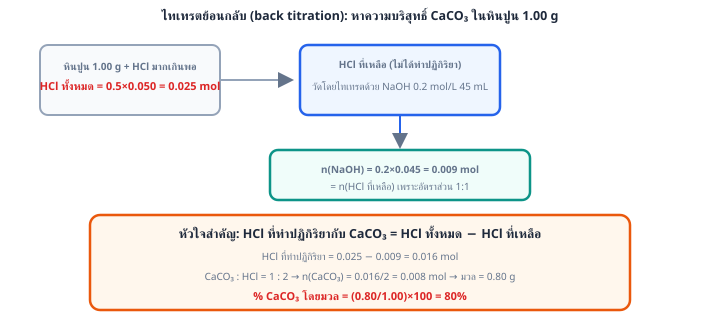
1 ขั้นที่ 1: โมล HCl ทั้งหมด
2 ขั้นที่ 2: โมล HCl ที่เหลือ = โมล NaOH
3 ขั้นที่ 3: HCl ที่ทำปฏิกิริยากับ
4 ขั้นที่ 4: อัตราส่วน
โมล mol มวล g
5 ขั้นที่ 5: ร้อยละ
ระวัง: ตอบ 160 คือลืมหาร 2 ในขั้นที่ 4 ตอบ 125 คือคิดว่า HCl ทั้ง 0.025 mol ทำปฏิกิริยาหมด (ไม่หักส่วนที่เหลือ) ทั้งสองกรณีได้ค่าเกิน 100 ควรสะกิดใจ ส่วนตอบ 45 คือเอาโมล NaOH มาคิดเป็นโมลที่ทำปฏิกิริยาเสียเอง
ตอบ: ข้อ ข. 80